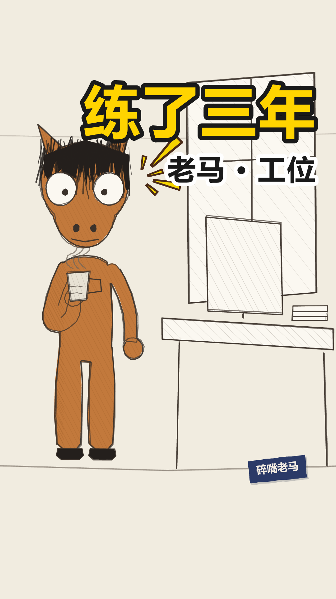
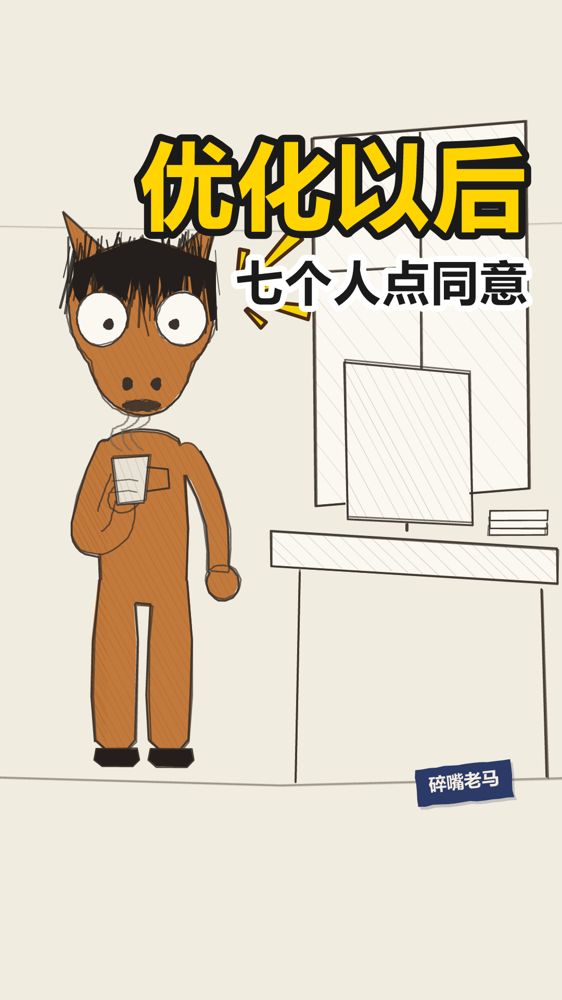
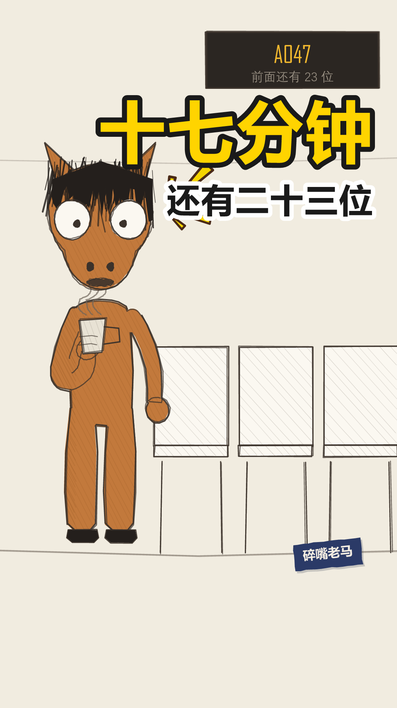
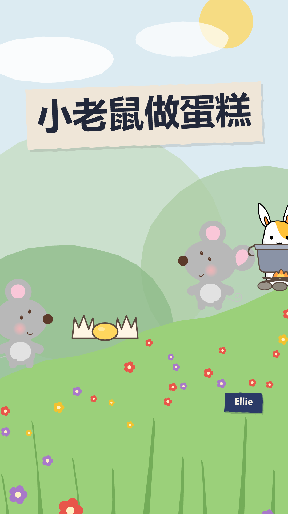
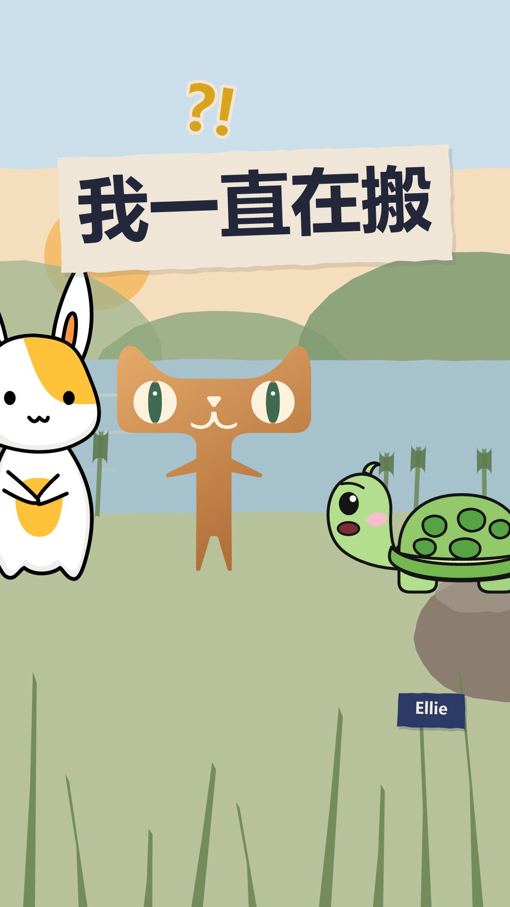
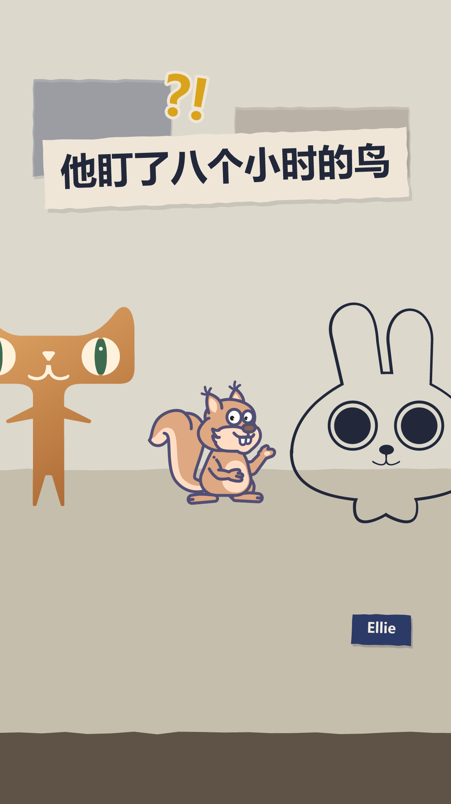
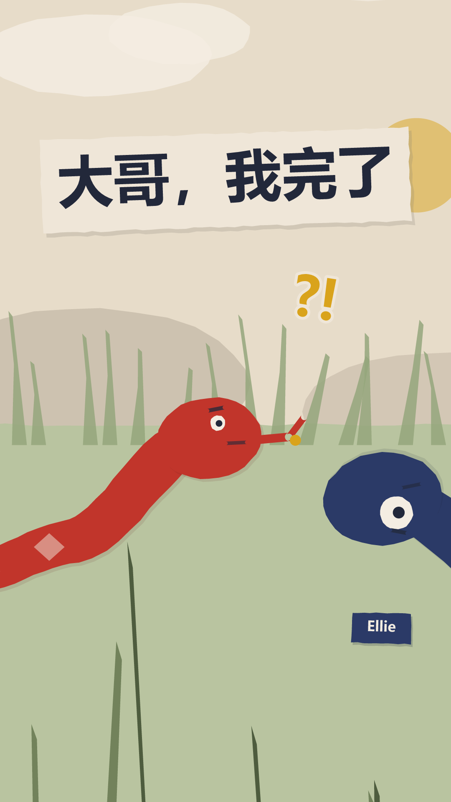
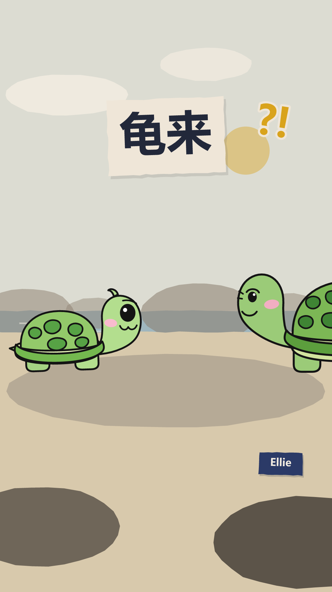

段子稿件预览
共 15 条 · 每句台词一张场景图，配对话内容与音色设置
公用素材
角色形象

"rig": "horse"段子独白线主角。**原稿在 horse/ 不在 assets/characters/** —— 那条线是外挂的一整套（角色 + 手绘线条场景 + 漫符），整体搬进来会跟剪纸风混成一锅。脸上不做戏，情绪靠眼珠和头边上的漫符原稿 horse/horse_only.svg
"rig": "turtle", "variant": "kid"呆毛 + 高光圆眼 + 粉腮。线稿描边风原稿 assets/characters/turtle-kid.svg
"rig": "turtle", "variant": "mom"眉毛 + 两道皱纹，壳更大更深原稿 assets/characters/turtle-mom.svg
"rig": "mouse", "length": 520**无描边扁平版**，跟乌龟的线稿描边、蛇的剪纸都不是一套。一条片子里别混风格。朝右（乌龟朝左）原稿 assets/characters/mouse.svg
"rig": "cat", "length": 620**渐变剪影风**，深紫身 + 橙色发光眼。⚠ 嘴不能动（原稿胡须鼻子嘴在同一条路径里），别当主讲角色，适合旁边盯着看或只给一两句短台词原稿 assets/characters/cat-night.svg
"rig": "cat", "variant": "day", "length": 620夜猫的同一副剪影换暖色（橘猫 + 墨绿眼）。白天戏用这个，夜猫摆进晨光里一眼穿帮。⚠ 嘴不能动这条照旧原稿 assets/characters/cat-night.svg
"rig": "serpentine", "length": 560蛇 / 鱼 / 虫。身体是正弦曲线，剪纸风纯代码画
"rig": "human", "proportion": "child"约 4 头身，动作快而弹纯代码画
"rig": "human", "proportion": "adultM"标准成年比例纯代码画
— （还没做骨架）线稿描边风，大尾巴 + 捧东西的手势。**只入库了原稿，还不能用在片子里**原稿 assets/characters/squirrel.svg
— （还没做骨架）**纯黑线稿风**，只有头 + 长耳 + 大黑眼，没有身体。跟其余风格都不是一套。**只入库了原稿**原稿 assets/characters/rabbit-line.svg
— （还没做骨架）奶白身 + 黄肚兜 + 橙耳内衬，全身站姿。跟松鼠同属线稿描边一族，能凑一条片子。**只入库了原稿**原稿 assets/characters/rabbit-white.svg
"rig": "human", "proportion": "elder"前倾 10°、动作慢 30%纯代码画场景

"scene": "grass"
"scene": "room"
"scene": "office"
"scene": "street"
"scene": "abstract"
"scene": "shore"
"scene": "hillside"
"scene": "hillrocks"
"scene": "pond"
"scene": "eaves"
"scene": "office-desk"
"scene": "meeting-room"
"scene": "rental-living"
"scene": "kitchen-table"
"scene": "bedroom"
"scene": "elevator"
"scene": "subway"
"scene": "hospital"
"scene": "home-living"
"scene": "street-night"example-human
npm run build 2.0s
2.0s这个需求今天能上线吗
 5.4s
5.4s能，只要不改
 8.1s
8.1s那我们改一下吧
开场 / 定格 / 钩子


落地方案 · 分镜表 · 发布文案方案.md ↗
这活儿谁干过谁懂 落地方案
带AUTO标记的区块由npm run preview从当前配置重新生成，改了会被覆盖。
其余部分随便改，重新生成时原样保留。
一、稿件定位
- 类型 A 类（对话反转，一句 punch 驱动全片）
- 一句话讲什么 （？）
- 为什么这么分镜 （？把稿件拆成这几镜的依据是什么）
- 不能动的地方 （？哪些参数是刻意调的，动了会破坏什么）
二、分镜表
| 时间 | 画面 | 台词 | 音效 / BGM |
|---|---|---|---|
| 0:00.0–0:01.8 | 开场空镜 场景 office | — | BGM happy |
| 0:02.0–0:02.0 | 场景 office 在场 pm + dev | pm：这个需求今天能上线吗 | — |
| 0:05.4–0:05.4 | 同上 | dev：能，只要不改 | wood |
| 0:08.1–0:08.1 | 同上 | pm：那我们改一下吧 | — |
| 0:10.5–0:15.9 | 定格去色 + 钩子字幕「这活儿谁干过谁懂」 | — | BGM 骤停 |
三、场景 / 角色 / 节奏
场景 office
节奏 banter
句内 0.18/0.12s 句间 0.35s 换镜 0.50s
| 角色 | 形象 | 音色 |
|---|---|---|
| pm | human x=默认 | 干练女 |
| dev | human x=默认 | 青年男 |
片长 15.85s 3 句 1 个分镜
四、发布文案
发平台时直接抄这一段。
- 标题候选
1. （？）
2. （？）
3. （？）
- 内容关键词 （？稿件本身讲的是什么，3–6 个）
- 热度关键词 （？观众会搜什么，跟内容沾边的高频词）
- 话题标签 （？#xxx）
- 简介 （？两三句，第一句要能单独立住，列表页只显示第一行）
- 封面大字
需求就改一个字
五、人工核对
- 每一镜的画面和台词对得上（看 index.html 的场景图）
- 音画同步：配音起点落在字幕窗口内
- 站位：
npm run layout零冲突 - 节奏：句间缓冲听着不赶
- 内容风控
laoma-001
laoma-001.mp4 1.3s
1.3s我们组的群里，最恐怖的两个字是收到
 5.1s
5.1s领导发一段话，十七个人排队回收到
 8.6s
8.6s你回晚了，显得不积极。你回早了，显得没看完
 13.6s
13.6s我练了三年，找到了最佳位置，第三个
 17.4s
17.4s第一个像拍马屁，最后一个像敷衍，第三个刚好像是认真读完的
 24.2s
24.2s至于内容，我一个字没看
封面 / 开场 / 定格 / 钩子



落地方案 · 分镜表 · 发布文案方案.md ↗
老马，今天也没辞职。 落地方案
带AUTO标记的区块由npm run preview从当前配置重新生成，改了会被覆盖。
其余部分随便改，重新生成时原样保留。
一、稿件定位
- 类型 A 类（对话反转，一句 punch 驱动全片）
- 一句话讲什么 群里回「收到」是有位置讲究的，他为此练了三年；至于内容，一个字没看。
- 为什么这么分镜
钩子 → 三个铺垫 → 转折 → 揭晓 → 落点，六句。
关键是揭晓和落点是分开的两句，中间停 0.55 秒：
原来它们是一句 41 字的长台词，laoma-check 报「落点句上限 15 字，超了 2.7 倍」。
更要命的是侧边字幕会把整句一次性排出来 —— 观众读完「我一个字没看」才听到他念，
包袱在字幕上先炸了一次，声音到的时候已经是复述（SCRIPT_GUIDE §五）。
拆开之后落点 12 字、单独一屏，两个问题一起解决。
「揭晓」不是落点：它还在解释规律，观众听到那儿只是「哦原来如此」。
真正的落点是把前面三年的功夫一句话全部作废。
- 不能动的地方
- camera: "static" —— 镜头一动，这条线「一个人站着讲」的质感就散了。
跟随是给对话类定的，这儿没有第二个人可跟
- cues 四个音效全关 —— 尤其定格那声「咚」，它等于自己先敲了一下锣
- 落点前那 0.55 秒 —— §四 写着「转折前那半秒是全片最重要的半秒」，
观众在这半秒里自己预判，然后被落点打掉。压缩它等于把包袱的助跑砍了
- 表情弧 心虚 → 不屑 → 笑眯眯 →（定格）瞪＋大汗 ——
前面 25 秒面无表情是为这一下攒的，中间任何一处提前做表情都会泄掉
- 封面 cam: zoom 1.0 —— 构图本身是内容（人在左三分之一、字在右半幅），
推近就只剩半张脸
二、分镜表
| 时间 | 画面 | 台词 | 音效 / BGM |
|---|---|---|---|
| 0:00.0–0:01.2 | 开场空镜 场景 office-desk | — | BGM 关 |
| 0:01.3–0:04.6 | 场景 office-desk 在场 ma 单人镜 | ma：我们组的群里，最恐怖的两个字是收到 | — |
| 0:05.1–0:08.3 | 同上 | ma：领导发一段话，十七个人排队回收到 | — |
| 0:08.6–0:12.6 | 同上 | ma：你回晚了，显得不积极。你回早了，显得没看完 | — |
| 0:12.6–0:13.4 | 闭目 0.8s 不是眨眼 —— 忍耐 | — | 静音 |
| 0:13.6–0:16.8 | 同上 扭头一次：话锋转了。§四 一条最多两次 | ma：我练了三年，找到了最佳位置，第三个 | — |
| 0:17.4–0:23.5 | 同上 | ma：第一个像拍马屁，最后一个像敷衍，第三个刚好像是认真读完的 | — |
| 0:24.2–0:26.8 | 同上 | ma：至于内容，我一个字没看 | — |
| 0:26.8–0:29.5 | 定格去色 + 钩子字幕「老马的第 1847 天」 | — | BGM 骤停 |
三、场景 / 角色 / 节奏
场景 office-desk
节奏 banter
句内 0.18/0.12s 句间 0.35s 换镜 0.50s
| 角色 | 形象 | 音色 |
|---|---|---|
| ma | horse x=290 | 老马 |
片长 29.48s 6 句 1 个分镜
四、发布文案
发平台时直接抄这一段。
- 标题候选
1. 回「收到」，我练了三年 ←主选
2. 我练了三年，就为了回两个字
3. 回「收到」的技巧，我练了三年
原来的主选是「我回消息的位置，是练过的」，换掉了。 它生硬，
而毛病不在少一个招人的词 —— 在「位置」是个抽象概念，读者得在脑子里翻译一道。
这条片子手里最有力的东西全是具体的：三年、两个字、第三个。抽象换具体就不硬了。
选 1 的理由：
- 「收到」摆在第一个字上。职场/群聊人群的强命中词，推荐系统抓关键词时吃得到；
「回消息的位置」一个命中词都没有
- 「练了三年」自带荒唐感，而且是事实陈述不是形容词（§一之四：具体压倒抽象）
- 10 字，竖屏一行不折行
- 落点没剧透。简介同理，写到「找到了最佳位置」为止
2 的数量级反差最狠（三年 vs 两个字），但标题里没有「收到」「群」这些命中词，
推荐系统抓关键词时吃亏。3 用了「技巧」——这不算热词
（体检的热词表是「绝绝子 / yyds / 摆烂」那一档），
但「技巧」是利益承诺，而正文最后一句是「我一个字没看」，等于把教程掀翻：
这是包袱，也可能被读成标题党。
三条都是陈述句、没有感叹号、没有热词——老马不用那种话说事（人设禁忌）。
「敲门砖」那个方向没做：「回收到是职场敲门砖」是总结句，
一总结就成了评论，而这条线的全部力气都花在「只陈述，判断留给你」上。
- 副标题
老马 · 工位 不愤怒，只是看得比谁都清楚 - 内容关键词 职场 / 群聊 / 回消息 / 收到 / 打工人
- 热度关键词 职场 / 打工人日常 / 微信群 / 办公室 / 社畜
- 话题标签 #老马 #职场 #打工人日常 #群聊
- 简介
> 我们组的群里，最恐怖的两个字是收到。
>
> 领导发一段话，十七个人排队回。回晚了显得不积极，回早了显得没看完。
> 我练了三年，找到了最佳位置。
简介到「找到了最佳位置」为止，不许往下写。 落点（「至于内容，我一个字没看」）
是这条片子唯一的包袱，写进简介就是自己先剧透 ——
列表页那一行的任务是让人点开，不是让人看完。
- 封面大字
练了三年
原来是「收到」，出封面时体检报了「大字只有 2 字，太短撑不住画面（建议 4–8 字）」。
换成「练了三年」还顺带跟标题对齐了 —— 标题、封面大字、收尾金句是同一个钩子的三种长度，
分开想必然对不齐。
五、人工核对
- 每一镜的画面和台词对得上（看 index.html 的场景图）
- 音画同步：配音起点落在字幕窗口内
- 站位：
npm run layout零冲突 - 节奏：句间缓冲听着不赶
- 内容风控
laoma-002
laoma-002.mp4 1.3s
1.3s我妈每天给我发天气预报
 3.4s
3.4s不是转发的那种，是她自己一个字一个字打的
 6.8s
6.8s明天降温，加衣服。有雨，带伞。风大，别骑车
 13.1s
13.1s我住的这个城市她没来过，但她每天都知道那儿几度
 18.0s
18.0s有一次我跟她说，妈，手机上都有
 21.6s
21.6s她说，我知道啊
 25.0s
25.0s第二天，她还是发了
封面 / 开场 / 定格 / 钩子


落地方案 · 分镜表 · 发布文案方案.md ↗
laoma-002 落地方案
带AUTO标记的区块由npm run preview从当前配置重新生成，改了会被覆盖。
其余部分随便改，重新生成时原样保留。
一、稿件定位
- 类型 A 类（对话反转，一句 punch 驱动全片）
- 一句话讲什么 我妈每天一个字一个字手打天气预报发给我；我说手机上都有，她说她知道，第二天照发。
- 为什么这么分镜
钩子 → 三条原话 → 距离 → 转折（扭头）→ 她的回答 → 张嘴无声 → 落点，七句。
这条稿子跟稿 1 是两种东西：稿 1 是段子，靠一句 punch 把前面全部作废；
这条没有可笑的地方，靠的是「拦不住」。所以结构也不一样 ——
- 铺垫必须是妈妈的原话（明天降温加衣服 / 有雨带伞 / 风大别骑车）。
复述成「她会提醒我加衣服」就完了：原话是证据，复述是评论，
而这条片子一旦开始评论就变成朋友圈鸡汤
- 三条是递进的：加衣服 → 带伞 → 别骑车，一条比一条管得宽。
§一之二 要三个例子，两个认不出规律，四个开始不耐烦
- 落点前那 1.6 秒是全片的核心，见下
- 不能动的地方
- openMouth: 1.6 —— 她说「我知道啊」，他张嘴想反驳，没话说。
前面二十多秒观众已经学会「嘴在动＝有话」，这一下嘴动了没声音，那个空是响的。
方案 §六 原话：「它把口型开但不出声用成了叙事手段 —— 画面的限制反过来变成了表达」。
这条片子就是为这 1.6 秒存在的，压缩它等于把片子拆了
- 没有收尾卡，黑场收（fadeOut: 1.4，不写 hook）。
固定收尾「老马，今天也没辞职。」是段子的 CTA，往这条后面一贴
就成了「刚才那是个段子」—— 而它不是
- 不垫 BGM。 这条稿子最容易犯的错就是垫一段温情钢琴，
那等于替观众定调，而这条线全部的力气都花在「只陈述，判断留给你」上
- 一个漫符都不放，也不挂说话放射。 黄色尖刺是喜剧记号；
符号是画面在替观众下判断 —— 这条片子最忌讳的就是替观众判断
- 落点 9 字，说完就完。 不解释、不总结、后面不再有话
- 定格是闭眼（endPose.eyes: "closed"）。全片唯一一次闭目，
§五：超过 0.5 秒的闭眼读作「忍耐/认命」，很重，所以只能有一次
二、分镜表
| 时间 | 画面 | 台词 | 音效 / BGM |
|---|---|---|---|
| 0:00.0–0:01.2 | 开场空镜 场景 street-night | — | BGM 关 |
| 0:01.3–0:02.9 | 场景 street-night 在场 ma 单人镜 | ma：我妈每天给我发天气预报 | — |
| 0:03.4–0:06.5 | 同上 | ma：不是转发的那种，是她自己一个字一个字打的 | — |
| 0:06.8–0:12.7 | 同上 | ma：明天降温，加衣服。有雨，带伞。风大，别骑车 | — |
| 0:13.1–0:17.4 | 同上 | ma：我住的这个城市她没来过，但她每天都知道那儿几度 | — |
| 0:18.0–0:21.1 | 同上 | ma：有一次我跟她说，妈，手机上都有 | — |
| 0:21.6–0:23.1 | 同上 | ma：她说，我知道啊 | — |
| 0:23.2–0:24.8 | 张嘴，不出声 1.6s 他想说什么，说不出来 | — | 静音 |
| 0:25.0–0:27.1 | 同上 | ma：第二天，她还是发了 | — |
| 0:27.1–0:31.1 | 定格去色 + 黑场 1.4s 不出收尾卡 | — | BGM 骤停 |
三、场景 / 角色 / 节奏
场景 street-night
节奏 banter
句内 0.18/0.12s 句间 0.35s 换镜 0.50s
| 角色 | 形象 | 音色 |
|---|---|---|
| ma | horse x=290 | 老马 |
片长 31.09s 7 句 1 个分镜
四、发布文案
发平台时直接抄这一段。
- 标题候选
1. 我妈每天给我发天气预报 ←主选
2. 我说手机上都有，她说我知道啊
3. 她没来过我这座城，却天天知道几度
选 1 的理由：「回家」这个栏目靠共鸣，不靠悬念。
转发的动机是「这就是我妈」，不是「我想知道结局」——
所以标题要让人一眼认出自己家那位，而不是抛个谜。
- 「妈」「天气预报」都是强命中词，而且是具体的东西，不是「关心」这种形容（§一之四）
- 11 字，竖屏一行不折行
- 落点（第二天她还是发了）没剧透
2 把转折整个放出来了，钩子更强，但它是一句对白，得读两遍才知道谁在说话；
3 最像文案，也最不像老马 —— 「却天天知道几度」是在替观众感慨，
而这条线的全部力气都花在不感慨上。
- 副标题
老马 · 回家 不愤怒，只是看得比谁都清楚 - 内容关键词 妈妈 / 天气预报 / 异地 / 家人 / 微信
- 热度关键词 妈妈 / 父母 / 异地 / 想家 / 亲情 / 打工人
- 话题标签 #老马 #回家 #妈妈 #异地 #家人
- 简介
> 我妈每天给我发天气预报。
>
> 不是转发的那种，是她自己一个字一个字打的。
> 明天降温加衣服，有雨带伞，风大别骑车。
> 我住的这个城市她没来过，但她每天都知道那儿几度。
写到「那儿几度」为止，不许往下写。 转折（妈，手机上都有）和落点
（第二天她还是发了）是这条片子仅有的两下，写进简介就是自己先剧透 ——
列表页那一行的任务是让人点开，不是让人看完。
- 封面大字
我妈的天气预报
五、人工核对
- 每一镜的画面和台词对得上（看 index.html 的场景图）
- 音画同步：配音起点落在字幕窗口内
- 站位：
npm run layout零冲突 - 节奏：句间缓冲听着不赶
- 内容风控
laoma-003
laoma-003.mp4 1.3s
1.3s电梯里最难的不是尴尬，是决定看哪儿
 5.0s
5.0s看人不礼貌
 6.3s
6.3s看地上像有心事
 8.2s
8.2s看手机显得不合群，虽然大家都在看手机
 12.5s
12.5s所以我们发明了一个方向，一个共同的
 16.4s
16.4s七个人，看同一个不会变快的数字
封面 / 开场 / 定格 / 钩子


落地方案 · 分镜表 · 发布文案方案.md ↗
老马，今天也没辞职。 落地方案
带AUTO标记的区块由npm run preview从当前配置重新生成，改了会被覆盖。
其余部分随便改，重新生成时原样保留。
一、稿件定位
- 类型 A 类（对话反转，一句 punch 驱动全片）
- 一句话讲什么 电梯里真正难的不是尴尬，是眼睛没地方放；所以七个人一起盯着一个不会变快的数字。
- 为什么这么分镜
钩子 → 三个例子 → 转折（扭头）→ 落点，六句。
- 钩子先否定一个更显然的答案（不是尴尬），再给真的那个。
这一下就是钩子结构本身 —— 观众心里已经有个答案了，你把它拿掉
- 三个例子各占一句，中间留停顿。这是 deadpan 报菜名的节奏，
连着念就成了绕口令。§一之二：两个不足以让人认出规律，四个开始不耐烦
- 转折那句的「发明」是关键词：它把一件人人都在做的小动作说成集体成果，
落点才有得可落
- 落点不解释那个数字是什么。场景里那块楼层屏从第一秒就在画面上，
观众已经看了二十秒了
- 不能动的地方
- 场景 elevator。选它不是为了换个背景 —— 场景里那块楼层屏写死是「12」，
整条片子一格不动，那正是落点说的「不会变快的数字」。
观众听到落点的时候不用想象，抬头就看得见
- 落点里的「七个人」不能改回原稿的「十二个人」。楼层屏写的就是 12，
两个 12 撞在一起，观众分不清说的是人数还是楼层。
而且 §一之四：具体的奇数听起来像真数过，整数像在举例
- 转折句拆成两屏（「所以我们发明了一个方向，」／「一个共同的。」）。
原稿是一整句 14 字，一屏装不下（上限 12），而且「共同的」跟「方向」挤在一起就滑过去了
- 闭目那 0.9 秒。「虽然大家都在看手机」说完闭上眼 —— 全片唯一一次，
§五：超过 0.5 秒的闭眼读作忍耐，很重，只能有一次
- 前 12 秒一个符号都没有（说话放射 setup: 0）。留白是为了让落点有东西可以亮
- 定格是张着嘴，不瞪眼。瞪眼是稿 1 那种「面具啪地掉下来」，这条只到「被自己抓包」那一档 ——
落点是个观察，观察完了没有下文，那个「没说完」正好
- 收尾卡上有一滴大汗（endMark，右上 / 0.5 / seed 2 / tilt 8，跟稿 1 同参）。
第一版这儿是空的：定格去色、一行藏青钩子字，两秒半的静止画面什么都没发生 ——
跟稿 1 摆在一起就看得出来漏了一层。这是系列里固定的一件事，一条一个样观众读不出「又到这儿了」。
原来判成「硬凑」（落点是观察不是自嘲，没有面具可掉），改口的理由在落点自己身上：
「我们发明了一个方向」的「我们」把他自己算进去了 —— 他就是那七个人之一。
上一句还在说「看手机显得不合群，虽然大家都在看手机」，转脸自己也在看那块屏。
这一滴是被自己抓包，不是慌张，跟人设不冲突。
位置和颜色都在干活：漫符不过 ink()，所以定格去色之后它是全屏唯一还有颜色的东西，
视线自然落上去；挂右上正好落在钩子字和头之间那块空墙上，不压头也不压字
二、分镜表
| 时间 | 画面 | 台词 | 音效 / BGM |
|---|---|---|---|
| 0:00.0–0:01.2 | 开场空镜 场景 elevator | — | BGM 关 |
| 0:01.3–0:04.5 | 场景 elevator 在场 ma 单人镜 | ma：电梯里最难的不是尴尬，是决定看哪儿 | — |
| 0:05.0–0:05.9 | 同上 | ma：看人不礼貌 | — |
| 0:06.3–0:07.8 | 同上 | ma：看地上像有心事 | — |
| 0:08.2–0:11.3 | 同上 | ma：看手机显得不合群，虽然大家都在看手机 | — |
| 0:11.4–0:12.3 | 闭目 0.9s 不是眨眼 —— 忍耐 | — | 静音 |
| 0:12.5–0:15.7 | 同上 | ma：所以我们发明了一个方向，一个共同的 | — |
| 0:16.4–0:19.6 | 同上 | ma：七个人，看同一个不会变快的数字 | — |
| 0:19.6–0:22.3 | 定格去色 + 钩子字幕「老马的第 1849 天」 | — | BGM 骤停 |
三、场景 / 角色 / 节奏
场景 elevator
节奏 banter
句内 0.18/0.12s 句间 0.35s 换镜 0.50s
| 角色 | 形象 | 音色 |
|---|---|---|
| ma | horse x=290 | 老马 |
片长 22.33s 6 句 1 个分镜
四、发布文案
发平台时直接抄这一段。
- 标题候选
1. 电梯里最难的是决定看哪儿 ←主选
2. 电梯里最难的不是尴尬
3. 七个人，一个不会变快的数字
选 1 的理由：
- 「电梯」是强命中词，而且一说就有画面 —— 谁都进过电梯
- 「决定看哪儿」是反常识的具体动作。人人都干过，但没人说破过 ——
这条片子全部的价值就在「原来这事有名字」
- 12 字，竖屏一行不折行
- 落点（七个人看同一个数字）没剧透
2 悬念更强（「那是什么？」），但它只否定不给答案 —— 点进来才知道讲什么，
完播率会好，点击率会差；3 直接把落点写在标题上，等于自己先剧透，
点进来只剩「哦，就这个」。
- 副标题
老马 · 众目睽睽 不愤怒，只是看得比谁都清楚 - 内容关键词 电梯 / 尴尬 / 看手机 / 公共场所 / 社交
- 热度关键词 电梯 / 社恐 / 尴尬 / 打工人 / 日常 / 都市
- 话题标签 #老马 #众目睽睽 #电梯 #社恐
- 简介
> 电梯里最难的不是尴尬，是决定看哪儿。
>
> 看人不礼貌。看地上像有心事。
> 看手机显得不合群 —— 虽然大家都在看手机。
写到「虽然大家都在看手机」为止。 转折（我们发明了一个共同的方向）和
落点（七个人看同一个不会变快的数字）是这条片子仅有的两下，
写进简介就是自己先剧透。
- 写法上留的两个尾巴
① 体检报「落点句 16 字，超过 15，能砍就砍」。没砍。
字数是含标点数的，去掉逗号句号是 14 字。而且「同一个」不能省 ——
它接的是转折那句的「一个共同的」，省了就断了。
② 体检报「全片 22.3s（区间 25–32）」。也没补。
这条稿子就这么长，往里塞话或者拉长停顿都是为了一个数字加东西。
而且方案 §七 自己写着：「30 秒的片子完播率低于 50%，说明形态不对，
要往 15–20 秒的纯金句压，而不是往长了写」—— 22 秒在那个方向上，不在反方向。
前三条发出去先看完播率，这条正好是短的那一个对照。
- 封面大字
决定看哪儿
五、人工核对
- 每一镜的画面和台词对得上（看 index.html 的场景图）
- 音画同步：配音起点落在字幕窗口内
- 站位：
npm run layout零冲突 - 节奏：句间缓冲听着不赶
- 内容风控
laoma-004
laoma-004.mp4 1.3s
1.3s我点外卖，从来不备注
 3.7s
3.7s不是我不挑，是我知道没用
 6.3s
6.3s我写过不要香菜，来的是双份香菜
 9.4s
9.4s我写过多放辣，来的是一份甜的
 12.1s
12.1s我写过不用餐具，来了三副
 15.4s
15.4s后来我改了个写法，备注只写两个字。随便
 19.8s
19.8s那顿全对。厨房也怕有要求
封面 / 开场 / 定格 / 钩子


落地方案 · 分镜表 · 发布文案方案.md ↗
老马的第 1850 天 落地方案
带AUTO标记的区块由npm run preview从当前配置重新生成，改了会被覆盖。
其余部分随便改，重新生成时原样保留。
一、稿件定位
- 类型 A 类（对话反转，一句 punch 驱动全片）
- 一句话讲什么 提要求换不来想要的东西，不提反而全对了 —— 而对面可能跟你一样，怕的就是有要求。
- 为什么这么分镜 一镜到底，不切。 全片只有一个人在餐桌前说话，切镜会把它变成 PPT（SCRIPT_GUIDE §五：一条切换不超过 3 次，这条用 0）。场景选
kitchen-table而不是rental-living，因为落点指的东西要从第一秒起就在画面上 —— 桌上那盒外卖整条片子没动过，观众听到「那顿全对」时抬眼就看得见。 - 不能动的地方
- x: 290 站位：跟 001/002/003 一模一样。系列里换位置，观众会以为换了个人
- 例三之后 closeEyes: 0.9：全片唯一一次闭目，是「受不了」不是眨眼。§五 规定超过 0.5 秒读作忍耐，全片最多一次，且不能用在落点句
- 转折句里「随便。」单独占一屏：它是全片的枢纽，跟前面三条的「提要求」正好相反，挤进句子里会滑过去
- 落点两句都用 叙平（−26%）：2026-08-21 渲过三档试听（同目录 试听-落点-*.wav）—— 甲 现状 / 乙 前快后慢（平 ＋ 叙缓）/ 丙 反过来（泄气 ＋ 平）。听完定的是保持现状，别再改成有落差的那两档
- 落点 13 字：§一之九 的上限是 15。原稿是 20 字的「我怀疑厨房那边也一样，最怕的就是有要求」，砍掉「我怀疑」是因为那把包袱推远了一层
- 收尾卡上那个灯泡（endMark，右上 / 0.45 / seed 2 / tilt 8）。第一版这儿是空的：定格去色、一行藏青钩子字，两秒七的静止画面什么都没发生 —— 这条的场景是餐桌，去色之后桌沿一道灰、桌上那两个外卖盒是两个空心浅灰方块，比稿 4 那条还秃（那条至少还有块楼层屏「12」压着）。口径见 老马出片方案 §五：出收尾卡的片子，卡上不能只有一行钩子字
- 是灯泡不是汗滴。 稿 1 / 稿 4 挂的那滴汗是「被自己抓包」，只在他把自己也算进去的时候才成立；这一条的落点「厨房也怕有要求」是站在事外下的一个推断，挂汗就是硬凑。灯泡对得上两头：落点本身是一次「想通了」（试出了写「随便」这个办法，还真管用），而 marks.mjs 给灯泡的备注是「自带反讽：老马想通的多半是件没用的事」—— 他悟出来的是「想拿到东西就别提要求」，这条道理越成立越丧
- 颜色是挑过的：漫符不过 ink()，收尾卡全屏去色，这一个是那一帧上唯一还有颜色的东西，视线才落得上去。灯泡 #F2D98A 暖黄活得下来；语义上更贴的「点」（无语）是灰的，挂上去跟去色的画面同一个调，看得见但不亮
二、分镜表
| 时间 | 画面 | 台词 | 音效 / BGM |
|---|---|---|---|
| 0:00.0–0:01.2 | 开场空镜 场景 kitchen-table | — | BGM 关 |
| 0:01.3–0:03.2 | 场景 kitchen-table 在场 ma 单人镜 | ma：我点外卖，从来不备注 | — |
| 0:03.7–0:05.8 | 同上 | ma：不是我不挑，是我知道没用 | — |
| 0:06.3–0:09.0 | 同上 | ma：我写过不要香菜，来的是双份香菜 | — |
| 0:09.4–0:11.7 | 同上 | ma：我写过多放辣，来的是一份甜的 | — |
| 0:12.1–0:14.2 | 同上 | ma：我写过不用餐具，来了三副 | — |
| 0:14.3–0:15.2 | 闭目 0.9s 不是眨眼 —— 忍耐 | — | 静音 |
| 0:15.4–0:19.1 | 同上 | ma：后来我改了个写法，备注只写两个字。随便 | — |
| 0:19.8–0:22.8 | 同上 | ma：那顿全对。厨房也怕有要求 | — |
| 0:22.8–0:25.5 | 定格去色 + 钩子字幕「老马的第 1850 天」 | — | BGM 骤停 |
三、场景 / 角色 / 节奏
场景 kitchen-table
节奏 banter
句内 0.18/0.12s 句间 0.35s 换镜 0.50s
| 角色 | 形象 | 音色 |
|---|---|---|
| ma | horse x=290 | 老马 |
片长 25.49s 7 句 1 个分镜
四、发布文案
发平台时直接抄这一段。
- 标题候选
1. 我点外卖，从来不备注 ←主选
2. 备注写了两个字，那顿全对
3. 我写不要香菜，来的是双份香菜
- 为什么是第 1 个 它就是钩子原句，跟封面大字「从来不备注」是同一句话的两种长度（标题 / 封面大字 / 钩子对齐，见 plan.ts）。第 2 个把转折抖在标题里，点进来就少了一层；第 3 个最好笑，但那是铺垫不是落点，标题用掉之后片子里那句就不新鲜了。
- 副标题
老马 · 一个人住 不是不挑，是知道没用 - 内容关键词 外卖备注 / 独居 / 点外卖 / 随便 / 一个人吃饭
- 热度关键词 外卖 / 香菜 / 独居生活 / 打工人日常 / 一个人住
- 话题标签 #独居 #一个人生活 #外卖
- 简介
> 我点外卖，从来不备注。
>
> 不是我不挑，是我知道没用。写过不要香菜，来的是双份香菜；写过多放辣，来的是一份甜的。
> 后来我改了个写法。
- 封面大字
从来不备注
五、人工核对
- 每一镜的画面和台词对得上（看 index.html 的场景图）
- 音画同步：配音起点落在字幕窗口内
- 站位：
npm run layout零冲突 - 节奏：句间缓冲听着不赶
- 内容风控
laoma-005
laoma-005.mp4 1.3s
1.3s我们公司有个词，我到现在也没弄明白，它叫对齐
 5.7s
5.7s开会前，要先对齐一下
 8.3s
8.3s开会的时候，全程都在对齐
 11.3s
11.3s开完会发个文档，确认刚才对齐了
 15.1s
15.1s上周有件事，一句话能说完，我们对齐了三次
 19.7s
19.7s第三次的结论是，下周接着对齐
封面 / 开场 / 定格 / 钩子


落地方案 · 分镜表 · 发布文案方案.md ↗
老马的第 1851 天 落地方案
带AUTO标记的区块由npm run preview从当前配置重新生成，改了会被覆盖。
其余部分随便改，重新生成时原样保留。
一、稿件定位
- 类型 A 类（对话反转，一句 punch 驱动全片）
- 一句话讲什么 一个所有人天天挂在嘴上、谁也说不清是什么意思的词 —— 而它唯一稳定的产出，是下一次它自己。
- 为什么这么分镜 一镜到底，不切。 全片只有一个人在会议室里说话，切镜会把它变成 PPT（SCRIPT_GUIDE §五：一条切换不超过 3 次，这条用 0）。场景选
meeting-room而不是沿用 001 的office-desk：落点指的东西要从第一秒起就在画面上 —— 那块白板上画着四行潦草的横线，不是字，是「写满了但一个字也认不出来」，那就是「对齐」这件事的样子；观众听到落点时，那块板他已经看了二十多秒。同属工位栏目但换了场景，也是为了第五条别让人以为是重发。 - 不能动的地方
- x: 290 站位：跟 001–004 一模一样。系列里换位置，观众会以为换了个人
- 字幕正好落在白板里，这是撞上的，但要留着。 侧边字幕的列是算出来的（角色框右边 +44，一直吃到画幅右边留 56），实测 x 509–1024；白板画在 430–1034。两者几乎重合 —— 于是每一屏字都排在白板上，看着像他说的话被写到了板上。这条片子讲的就是「写满了一板子，一个字也没用」，比排在空墙上贴题得多。⚠ 但这意味着字幕列和白板是绑死的：动白板的尺寸、动 x、动 sideText 的 GAP/EDGE，都会让字骑在板子边框上（一半在板上一半在墙上，那就成事故了）。改任何一个都要重看一遍 03/05/07 三张场景图
- 三条例子的 padAfter 必须等长（0.3）：§四 要的是「短且等长」，节拍立不住，转折前那半秒就没有对比。三句长短本来就参差，停顿再不齐就成了在讲故事
- 例三之后 closeEyes: 0.9：全片唯一一次闭目，是「受不了」不是眨眼。§五 规定超过 0.5 秒读作忍耐，全片最多一次，且不能用在落点句。⚠ padAfter: 1.05 是为它加长的，改小会让闭目咬进下一句（体检拦）
- 落点末词是「对齐」，不是「一次」：原大纲写的是「对齐的结论是，这件事还需要再对齐一次。」—— 16 字超上限，而且最后一个词是量词，包袱落在倒数第三个字上，正是 §一之一 说的毛病。现在 13 字、末词砸回「对齐」
- 转折里的「三次」不能换成大纲原来的「两个小时」：§一之四 具体的奇数听起来像真数过；更要紧的是「小时」量时长、「次」量回合，回合数才接得上落点的「第三次」
- 落点两句都用 叙平：§四 落点句语速 0.85、不加重音 —— 加重音等于自己先笑了
- 收尾卡那个「冷」：见下
- 收尾卡上必须有东西（endMark，冷 / 右上 / 0.42 / seed 2 / tilt 8）。口径见 老马出片方案 §五：出收尾卡的片子，卡上不能只有一行钩子字 —— 定格去色 ＋ 一行藏青字，两秒七什么都不发生，观众读作「没做完」而不是「克制」
- 是「冷」不是汗、不是灯。 汗＝被自己抓包（稿 1 面具掉下来，稿 4 他就是那七个人之一）；灯＝想通了一件没用的事（稿 3 试出写「随便」那个办法）。这一条两样都不是：他没被抓包，也没想通任何事 —— 他发现的是这件事没有出口，第三次会的产出是第四次会。那一下是后背一紧。颜色也过了那道关：漫符不过 ink()，收尾卡全屏去色，这一个是那一帧上唯一还有颜色的东西；语义上也贴的「点」（无语）和「云」（丧）都是灰调的，挂上去看得见但不亮
二、分镜表
| 时间 | 画面 | 台词 | 音效 / BGM |
|---|---|---|---|
| 0:00.0–0:01.2 | 开场空镜 场景 meeting-room | — | BGM 关 |
| 0:01.3–0:05.3 | 场景 meeting-room 在场 ma 单人镜 | ma：我们公司有个词，我到现在也没弄明白，它叫对齐 | — |
| 0:05.7–0:07.9 | 同上 | ma：开会前，要先对齐一下 | — |
| 0:08.3–0:10.9 | 同上 | ma：开会的时候，全程都在对齐 | — |
| 0:11.3–0:14.0 | 同上 | ma：开完会发个文档，确认刚才对齐了 | — |
| 0:14.1–0:15.0 | 闭目 0.9s 不是眨眼 —— 忍耐 | — | 静音 |
| 0:15.1–0:19.1 | 同上 | ma：上周有件事，一句话能说完，我们对齐了三次 | — |
| 0:19.7–0:23.2 | 同上 | ma：第三次的结论是，下周接着对齐 | — |
| 0:23.2–0:25.9 | 定格去色 + 钩子字幕「老马的第 1851 天」 | — | BGM 骤停 |
三、场景 / 角色 / 节奏
场景 meeting-room
节奏 banter
句内 0.18/0.12s 句间 0.35s 换镜 0.50s
| 角色 | 形象 | 音色 |
|---|---|---|
| ma | horse x=290 | 老马 |
片长 25.95s 6 句 1 个分镜
四、发布文案
发平台时直接抄这一段。
- 标题候选
1. 我们公司有个词，我到现在也没弄明白 ←主选
2. 上周有件事，我们对齐了三次
3. 开会前对齐，开会时对齐，开完会确认对齐了
- 为什么是第 1 个 它就是钩子原句，而且故意不说那个词是什么 —— 悬念留在片子里，点进来第三屏才揭晓。跟封面大字「对齐了三次」唱双簧：标题问是什么，封面答是几次，两边都不剧透落点。第 2 个把转折抖在标题上，点进来就少了一层；第 3 个最像段子，但它是铺垫，标题用掉之后片子里那三句就不新鲜了。
- 副标题
老马 · 工位 第三次的结论，是下周再来一次 - 内容关键词 对齐 / 开会 / 职场黑话 / 无效会议 / 打工人
- 热度关键词 职场黑话 / 互联网黑话 / 开会 / 无效会议 / 打工人日常
- 话题标签 #职场黑话 #开会 #打工人
- 简介
> 我们公司有个词，我到现在也没弄明白。
>
> 开会前要先对齐一下，开会的时候全程都在对齐，开完会还要发个文档，确认刚才对齐了。
> 上周有件事，我们对齐了三次。
- 封面大字
对齐了三次
五、人工核对
- 每一镜的画面和台词对得上（看 index.html 的场景图）
- 音画同步：配音起点落在字幕窗口内
- 站位：
npm run layout零冲突 - 节奏：句间缓冲听着不赶
- 内容风控
laoma-006
laoma-006.mp4 1.3s
1.3s健身卡这个东西，我买的时候不当运动，当理财
 5.6s
5.6s一次性存一笔钱进去，然后就不管了
 8.9s
8.9s每个月按时不去，一次也没落下
 11.7s
11.7s一年下来我去了三次，平均一次四百块
 16.4s
16.4s上个月他们打电话来，说卡快到期了，问我续不续
 21.5s
21.5s续吧。我也没打算取
封面 / 开场 / 定格 / 钩子


落地方案 · 分镜表 · 发布文案方案.md ↗
老马的第 1852 天 落地方案
带AUTO标记的区块由npm run preview从当前配置重新生成，改了会被覆盖。
其余部分随便改，重新生成时原样保留。
一、稿件定位
- 类型 A 类（对话反转，一句 punch 驱动全片）
- 一句话讲什么 把一张办了不去的健身卡当成理财产品来讲 —— 讲到最后他续了费，理由是这笔钱他本来也没打算取回来。
- 为什么这么分镜 一镜到底，不切。 全片一个人在出租屋客厅说话，切镜会把它变成 PPT（SCRIPT_GUIDE §五：一条切换不超过 3 次，这条用 0）。场景选
rental-living：落点指的东西要从第一秒起就在画面上 —— 这条讲的是健身卡，那画面上该有的不是健身房，是他这二十几秒实际待着的地方，一张占了右半幅的沙发。没选bedroom：床太直白，等于替观众把话说完；沙发说的是「他没在健身」，不是「他在偷懒」，差一档。 - 不能动的地方
- x: 290 站位：跟 001–005 一模一样。系列里换位置，观众会以为换了个人
- 例一那个「存」不能改字。 它是落点「取」的唯一线索（§一之三 误导必须公平）。换成「交一笔钱」「充一笔钱」，最后那个「取」就落空了
- 三条例子的 padAfter 必须等长（0.3）：§四 要「短且等长」，节拍立不住，转折前那半秒就没有对比
- 例三之后 closeEyes: 0.9：全片唯一一次闭目，是「受不了」不是眨眼。⚠ padAfter: 1.05 是为它加长的，改小会让闭目咬进下一句（体检拦）
- 落点「续吧。」后面那 0.38 秒不能删。 观众在这 0.38 秒里以为落点就是「唉，又续了」，然后才挨到真的那一下。两小句同屏＝提前剧透
- 不要把落点改成「我也不打算去」：那只是重复前面说过的事实。「取」是理财那套词，是新信息，而且悄悄承认了这笔钱他压根没想要回来
- 「三次」「四百块」不能凑成整数：§一之四，奇数和非整数听起来像真数过。一千二这个总数故意不说出口，让观众自己乘 —— 自己算出来的数字比听来的有劲
- 收尾卡那滴汗：见下
- 收尾卡上必须有东西（endMark，汗 / 右上 / 0.5 / seed 2 / tilt 8）。口径见 老马出片方案 §五
- 语义上的第一人选其实是「云」（丧 / 认了），渲出来对比过：云画得清清楚楚，但它整个在灰调里（#D8D2C6 加墨线），去色之后跟整幅画同一个调子，读作画面的一部分，不是「那一帧上唯一还活着的东西」。退回汗也站得住：他刚花二十秒把这张卡算得明明白白，下一秒当着镜头说「续吧」，那一下的尴尬是真的。⚠ 这是第三条用汗的（001 / 003 / 006），再用之前先问一句是不是真的「被自己抓包」 —— 一旦变成缺省就退化成频道 logo
二、分镜表
| 时间 | 画面 | 台词 | 音效 / BGM |
|---|---|---|---|
| 0:00.0–0:01.2 | 开场空镜 场景 rental-living | — | BGM 关 |
| 0:01.3–0:05.2 | 场景 rental-living 在场 ma 单人镜 | ma：健身卡这个东西，我买的时候不当运动，当理财 | — |
| 0:05.6–0:08.5 | 同上 | ma：一次性存一笔钱进去，然后就不管了 | — |
| 0:08.9–0:11.3 | 同上 | ma：每个月按时不去，一次也没落下 | — |
| 0:11.7–0:15.3 | 同上 | ma：一年下来我去了三次，平均一次四百块 | — |
| 0:15.3–0:16.2 | 闭目 0.9s 不是眨眼 —— 忍耐 | — | 静音 |
| 0:16.4–0:20.8 | 同上 | ma：上个月他们打电话来，说卡快到期了，问我续不续 | — |
| 0:21.5–0:23.7 | 同上 | ma：续吧。我也没打算取 | — |
| 0:23.7–0:26.4 | 定格去色 + 钩子字幕「老马的第 1852 天」 | — | BGM 骤停 |
三、场景 / 角色 / 节奏
场景 rental-living
节奏 banter
句内 0.18/0.12s 句间 0.35s 换镜 0.50s
| 角色 | 形象 | 音色 |
|---|---|---|
| ma | horse x=290 | 老马 |
片长 26.44s 6 句 1 个分镜
四、发布文案
发平台时直接抄这一段。
- 标题候选
1. 健身卡这个东西，我买的时候不当运动 ←主选
2. 每个月按时不去，一次也没落下
3. 一年去了三次，平均一次四百块
- 为什么是第 1 个 它是钩子原句，而且故意断在「不当运动」上 —— 那当什么？悬念留给片子，第三屏才揭晓。跟封面大字「按时不去」唱双簧：封面给的是那个错位，标题给的是那个反常识断言，两边都不碰落点。第 2 个最好笑，但它是铺垫，标题用掉之后片子里那句就不新鲜了；第 3 个把最具体的细节先抖出来，等于把观众自己乘一千二的乐趣拿走了。
- 副标题
老马 · 一个人住 续吧，反正也没打算取 - 内容关键词 健身卡 / 办卡不去 / 续费 / 独居 / 沉没成本
- 热度关键词 健身卡 / 健身房 / 办卡 / 打工人日常 / 一个人住
- 话题标签 #健身卡 #一个人生活 #独居
- 简介
> 健身卡这个东西，我买的时候不当运动，当理财。
>
> 一次性存一笔钱进去，然后就不管了。每个月按时不去，一次也没落下。
> 一年下来我去了三次。上个月他们打电话来，说卡快到期了。
- 封面大字
按时不去
五、人工核对
- 每一镜的画面和台词对得上（看 index.html 的场景图）
- 音画同步：配音起点落在字幕窗口内
- 站位：
npm run layout零冲突 - 节奏：句间缓冲听着不赶
- 内容风控
laoma-007
laoma-007.mp4 0.0s
0.0s上个月优化以后，报销要过七个人
 3.4s
3.4s优化以前是这样，找我领导签个字，三天
 7.1s
7.1s现在不用找人了，打开系统，自己提交
 10.8s
10.8s系统里有七个节点，每个节点一个人点同意，都是我同事
 16.0s
16.0s上周我报了一笔打车费，一共三十七块，当天就提了
 20.8s
20.8s今天，第十一天
封面 / 开场 / 定格 / 钩子



落地方案 · 分镜表 · 发布文案方案.md ↗
老马的第 1853 天 落地方案
带AUTO标记的区块由npm run preview从当前配置重新生成，改了会被覆盖。
其余部分随便改，重新生成时原样保留。
一、稿件定位
- 类型 A 类（对话反转，一句 punch 驱动全片）
- 一句话讲什么 一个流程被优化了：签字的人从一个变成七个，三天变成十一天 —— 而他从头到尾没说过一句「这不合理」。
- 为什么这么分镜 一镜到底，不切。 全片一个人在工位说话，切镜会把它变成 PPT（SCRIPT_GUIDE §五：一条切换不超过 3 次，这条用 0）。场景选
office-desk：落点指的东西要从第一秒起就在画面上 —— 那台显示器就是「系统」，观众听到「第十一天」的时候，那块屏他已经看了二十多秒。跟 001 同场景但隔了六条，而且 001 讲群消息、这条讲审批流；工位栏目只有两个场景，005 刚用过 meeting-room。 - 不能动的地方
- x: 290 站位：跟 001–006 一模一样
- 例一那个「三天」不能删、不能并屏。 它是落点「第十一天」唯一的尺子（§一之三 误导必须公平）—— 没有这个基准，十一天只是个数字，观众量不出长短
- 例二不能带贬义。 「不用找人了，打开系统，自己提交」听上去必须是个改进，观众跟着以为这是进步，第三条才打得下去
- 三条例子的 padAfter 必须等长（0.3）：§四 要「短且等长」，节拍立不住，转折前那半秒就没有对比
- 例三之后 closeEyes: 0.9：全片唯一一次闭目。⚠ padAfter: 1.05 是为它加长的，改小会让闭目咬进下一句（体检拦）
- 落点「今天，」后面那 0.4 秒不能删。 观众在这 0.4 秒里知道要来一个数，但不知道是几 —— 这半拍就是让他自己先猜一个，然后被那个数打掉
- 不要把落点改成「到今天还没批下来」：那是在解释，而且末词成了「下来」不是那个数。数字自己就是包袱，多一个字都是替观众下判断
- 三天 / 七个 / 三十七块 / 十一天，四个数一个都不能凑成整数：§一之四，奇数和非整数听起来像真数过
- 物件是「系统」（object 字段，出现在第 3、4 两句）。§一之十二 判据：删掉它至少有一句话说不通 ——
删掉系统，「打开系统，自己提交」和「系统里有七个节点」当场垮掉。而且全片一个字都没解释它：
谁做的、为什么七个节点、凭什么去掉一个人要加七个人。物件要有用，不给的是解释。
- 钩子 2 → 回收 6（hookLine / payoffLine）：第 2 句「找我领导签个字，三天」，第 6 句「今天，第十一天」——
量度回收，字面共用一个「天」，那正是被比较的单位。不能写成钩子 1：第 1 句没埋任何具体的东西，跟落点一个实词都不重叠
- ⚠ 2026-08-22 删掉了转折句末尾的「发票是绿的。」。 那是上一版 §一之十二（要「闲置物件」）催生的装饰：
纯外观描述、只出现一次、删掉毫发无伤 —— 新规范点名的反例，体检的 APPEARANCE 正则就是照它写的。别再补回去
- 收尾卡那个问号：见下
- 收尾卡挂问号，不是汗也不是灯。 这一条的第二层就是一个问句：他把账算完了，全程一个判断都没下，那句没说出口的「所以这优化了什么」交给收尾卡 —— 它不是替观众下判断，它就是观众自己的那句话。汗＝被自己抓包（这条他是受害者），灯＝想通了（他什么都没想通），都不对
- ⚠ 挑它的时候顺带修了一条我自己写的规矩：老马出片方案 §五 原来写「漫符必须是那一帧上唯一有颜色的东西」，按那条问号该被排除（它是墨色）。渲出来判据该是落差不是颜色 —— 问号近黑压在浅墙上，明度差比那滴淡蓝的汗还大。真正挂不住的是中间调（点、云）
二、分镜表
| 时间 | 画面 | 台词 | 音效 / BGM |
|---|---|---|---|
| 0:00.0–0:00.0 | 开场空镜 场景 office-desk | — | BGM 关 |
| 0:00.0–0:02.9 | 场景 office-desk 在场 ma 单人镜 | ma：上个月优化以后，报销要过七个人 | — |
| 0:03.4–0:06.7 | 同上 | ma：优化以前是这样，找我领导签个字，三天 | — |
| 0:07.1–0:10.4 | 同上 | ma：现在不用找人了，打开系统，自己提交 | — |
| 0:10.8–0:14.9 | 同上 | ma：系统里有七个节点，每个节点一个人点同意，都是我同事 | — |
| 0:14.9–0:15.8 | 闭目 0.9s 不是眨眼 —— 忍耐 | — | 静音 |
| 0:16.0–0:20.2 | 同上 | ma：上周我报了一笔打车费，一共三十七块，当天就提了 | — |
| 0:20.8–0:22.7 | 同上 | ma：今天，第十一天 | — |
| 0:22.7–0:25.4 | 定格去色 + 钩子字幕「老马的第 1853 天」 | — | BGM 骤停 |
三、场景 / 角色 / 节奏
场景 office-desk
节奏 banter
句内 0.18/0.12s 句间 0.35s 换镜 0.50s
| 角色 | 形象 | 音色 |
|---|---|---|
| ma | horse x=290 | 老马 |
片长 25.42s 6 句 1 个分镜
四、发布文案
发平台时直接抄这一段。
- 标题候选
1. 我们公司上个月优化了一个流程 ←主选
2. 优化以前找领导签个字，三天
3. 一笔三十七块的打车费
- 为什么是第 1 个 它是钩子原句，「优化」这两个字放在标题里自带反讽，而且它不说优化成了什么 —— 悬念全留在片子里。跟封面大字「优化以后」唱双簧：大字问「以后怎么样了」，标题给「上个月优化了」，两边都不碰落点那个数。第 2 个把基准值抖在标题上，观众就有了预期；第 3 个最抓人，但它是转折句，用掉之后片子里那句就不新鲜了。
- 副标题
老马 · 工位 签字的人从一个变成七个 - 内容关键词 优化流程 / 报销 / 审批 / 无效流程 / 打工人
- 热度关键词 报销 / 审批流程 / 优化 / 职场黑话 / 打工人日常
- 话题标签 #报销 #职场 #打工人
- 简介
> 我们公司上个月，优化了一个流程，报销的那个。
>
> 优化以前是这样：找我领导签个字，三天。优化以后不用找人了，打开系统，自己提交。
> 系统里有七个节点，每个节点一个人点同意。
- 封面大字
优化以后
五、人工核对
- 每一镜的画面和台词对得上（看 index.html 的场景图）
- 音画同步：配音起点落在字幕窗口内
- 站位：
npm run layout零冲突 - 节奏：句间缓冲听着不赶
- 内容风控
laoma-008
laoma-008.mp4 0.0s
0.0s我在医院等叫号，屏上写着，前面还有二十三位
 4.5s
4.5s它不写还要等多久，只写一个数
 7.9s
7.9s这个数掉得没规律，能十七分钟不动
 11.2s
11.2s边上还有一扇小门，时不时进去一个人，屏上那个数不动
 16.9s
16.9s我在那张椅子上，坐了一个半小时，没敢走开
 21.2s
21.2s屏上少了两位。小门进去了五个
封面 / 开场 / 定格 / 钩子



落地方案 · 分镜表 · 发布文案方案.md ↗
老马的第 1854 天 落地方案
带AUTO标记的区块由npm run preview从当前配置重新生成，改了会被覆盖。
其余部分随便改，重新生成时原样保留。
一、稿件定位
- 类型 A 类（对话反转，一句 punch 驱动全片）
- 一句话讲什么 同一段时间里，正门的队伍挪了两位，旁边那扇没人解释过的小门进去了五个 —— 荒唐的不是等，是这两个数摆在一起的样子。
- 为什么这么分镜 一镜到底，不切。 全片一个人在候诊区说话，切镜会把它变成 PPT（SCRIPT_GUIDE §五：一条切换不超过 3 次，这条用 0）。场景选
hospital：落点指的东西要从第一秒起就在画面上 —— 屏上写死「A047 / 前面还有 23 位」，整条片子一格不动，观众听到「它少一位的时候」，那个 23 他已经盯了二十多秒了。这是稿 4《看哪儿》那块楼层屏的同一手。这个场景第一次用：众目睽睽只有三个场景，003 用掉 elevator，subway 留给「地铁上的让座」。 - 出场走「先出声，后出人」（
opening: { style: "voice-first" }，2026-08-22 换的，这是这一档的第一条片子）。
首帧是场景 ＋ 一行大字「前面还有二十三位」，第 1 句的声音同时起；
他在第 1 句说完那半秒静音里滑进来。台词一个字没改，只是没有了 1.35 秒的开场空镜 —— 片长 28.7 → 27.3。
⚠ 这一条白捡了一层：叫号屏上写着「前面还有 23 位」，大字和屏上那行字说的是同一句。
挑这条开这档的判据：落点靠两个数，而第 1 句里就有一个数摆得出来（二十三）。
009 的钩子是「我们开会有一句话」，抽象句撑不住那么大的字号，那条留在老样子。
- 不能动的地方
- x: 290 站位：跟 001–007 一模一样。系列里角色的站位要固定
- 稿子里的「二十三」必须跟屏上那个数一致。 它不是随手写的数，是观众正看着的那个 —— 改稿改到这个数，得连 horse/scenes.mjs 的 hospital 一起改
- 例二那句「能十七分钟不动，也能一下少两个」不能删、不能并屏。 它是落点唯一的尺子（§一之三 误导必须公平）：先给出「一下少两个」这个上限，观众才量得出「少一位」是最小的那一档，为它鼓掌才荒唐。没有这句，落点只是一个人在傻乐
- 例三不能挖到人身上。 「时不时进去一个人」挖的是这套系统，不是插队的人 —— 老马对世界没有敌意（人设：他不觉得别人坏，只觉得事情就是这样）。写成「有人插队」这条稿就废了
- 三条例子的 padAfter 必须等长（0.3）：§四 要「短且等长」，节拍立不住，转折前那半秒就没有对比
- 例三之后 closeEyes: 0.9：全片唯一一次闭目。⚠ padAfter: 1.05 是为它加长的，改小会让闭目咬进下一句（体检拦）
- 物件是「小门」（object，第 4、6 两句）。§一之十二 判据：删掉小门，第 4 句整句没了、落点塌一半。
全片一个字都没解释它：谁能走？凭什么？—— 这就是「未解释」和「闲置」的区别，它一直在起作用，只是讲的人懒得解释
- 钩子 4 → 回收 6：第 6 句字面复现「小门」。不许写成「那扇门」「旁边那个口子」——
听觉媒介，观众没法回看，换个说法他得先认出「这说的是刚才那个」，那一下的迟疑正好盖住笑点（§一之十四）
- ⚠ 落点改过两版，别往回退。
初版「它少一位的时候，我差点鼓掌」是反应句（§一之十三 判废）。
二版「一个半小时，我看着它掉了一位」是事实了，但跟小门没关系 —— 埋了不收，而且比的是「时长 vs 一位」，那是他一个人的账。
现在这版比的是同一段时间里正门两个、侧门五个，账是这套系统的（§八：制度性荒诞 > 个人倒霉）。
- 落点「屏上少了两位。」后面那 0.4 秒不能删。 观众在这 0.4 秒里以为讲完了（不就是等半天挪两位嘛），然后小门被端出来
- 高亮给「五个」不是「两位」 —— 末词才是笑点（§一之一）
- ⚠ 第 3 句砍掉了「也能一下少两个。」 ——「两」这个量留给落点，一条稿子里同一个量别出现两次（§一之十六）
- ⚠ 转折句末尾的「手里的挂号单是粉色的。」删了。 上一版规范催生的装饰，纯外观描述、只出现一次，而且把那句顶到 25 字，超了 §一之十五 的 24 字上限
- 三条例子的 padAfter 必须等长（0.3）：§四 要「短且等长」，节拍立不住，转折前那半秒就没有对比
- 例三之后 closeEyes: 0.9：全片唯一一次闭目。⚠ padAfter: 1.05 是为它加长的，改小会让闭目咬进下一句（体检拦）
- ⚠ 落点是 2026-08-22 重写过的，别改回去。 初版是「它少一位的时候，我差点鼓掌」——
那是反应不是事实（§一之十三）。「我差点鼓掌」已经替观众把这件事归好了档：「这是个可笑的反应」，
观众只剩点头的份。现在的「一个半小时，我看着它掉了一位」什么都没归档，荒唐感是观众自己从两个数之间量出来的。
量出来的比递到手上的重。
- 「我」留着，动词换了。 §一之十一 第一人称照旧贯穿 —— 分界在动词：「我看着」是事实，「我差点」是反应。
写成光秃秃的「它掉了一位」会把人从画面里抽走
- 「一个半小时」必须跟「一位」挨着出。 它原来在转折句里，那等于提前把尺子给出去，落点只剩一个数没东西可比
- 落点「一个半小时，」后面那 0.4 秒不能删。 观众在这 0.4 秒里知道要来一个量，但猜不到有多小 —— 这半拍是让他自己先估一个
- ⚠ 转折句末尾那句「手里的挂号单是粉色的。」不能删 —— §一之十二 的未解释的具体物件。
它不影响等多久、不是笑点的一环，删掉落点一个字都不用改。挑颜色不挑「折了三折」，是因为
①单据的颜色明摆着是惰性的，没人会当它是伏笔（§一之十二 警告过「别挑跟笑点沾边的」）；②「折」有三读，颜色零多音字风险
- 不要把落点写成「我差点鼓起掌来」：多两个字，末词就从「鼓掌」滑到「起来」了（§一之一 笑点落在最后一个词）
- 二十三 / 十七 / 一个半 / 一位，四个数一个都不能凑成整数：§一之四，奇数和非整数听起来像真数过
- 收尾卡挂汗，不是问也不是灯。 §五 的判据：汗＝落点把他自己也算进去、当场被自己抓包。这条正是 —— 抓包的人是他自己。稿 7 的问号不对（那条他是受害者、站在事外），灯不对（他什么都没想通）。参数照抄不换 seed
- ⚠ 叫号屏的高度是为收尾卡让出来的，不要改回去。 原来 470×230（y 89–319）跟钩子字幕（画死在 y=250，墨迹 268–313、横跨 x 324–756）正好叠在一起，而屏是 DARK、钩子是藏青，字直接看不见。这是 003 那块楼层屏踩过的坑（「场景里靠上的元素跟收尾卡是同一片地」），那次是渲出来才发现，这次是渲之前量的。改成 470×152（底 y≈241）
二、分镜表
| 时间 | 画面 | 台词 | 音效 / BGM |
|---|---|---|---|
| 0:00.0–0:00.0 | 开场空镜 场景 hospital | — | BGM 关 |
| 0:00.0–0:04.0 | 场景 hospital 在场 ma 单人镜 | ma：我在医院等叫号，屏上写着，前面还有二十三位 | — |
| 0:04.5–0:07.5 | 同上 | ma：它不写还要等多久，只写一个数 | — |
| 0:07.9–0:10.8 | 同上 | ma：这个数掉得没规律，能十七分钟不动 | — |
| 0:11.2–0:15.7 | 同上 | ma：边上还有一扇小门，时不时进去一个人，屏上那个数不动 | — |
| 0:15.8–0:16.7 | 闭目 0.9s 不是眨眼 —— 忍耐 | — | 静音 |
| 0:16.9–0:20.5 | 同上 | ma：我在那张椅子上，坐了一个半小时，没敢走开 | — |
| 0:21.2–0:24.6 | 同上 | ma：屏上少了两位。小门进去了五个 | — |
| 0:24.6–0:27.3 | 定格去色 + 钩子字幕「老马的第 1854 天」 | — | BGM 骤停 |
三、场景 / 角色 / 节奏
场景 hospital
节奏 banter
句内 0.18/0.12s 句间 0.35s 换镜 0.50s
| 角色 | 形象 | 音色 |
|---|---|---|
| ma | horse x=290 | 老马 |
片长 27.30s 6 句 1 个分镜
四、发布文案
发平台时直接抄这一段。
- 标题候选
1. 我在医院等叫号，前面还有二十三位 ←主选
2. 这个数能十七分钟不动
3. 我在那张椅子上坐了一个半小时
- 为什么是第 1 个 它是钩子原句，一句话把场合和处境都交代了，而且「二十三位」这个数观众自己会换算成时间 —— 悬念不用写，它自带。跟封面大字「十七分钟」唱双簧：大字给一个没有单位的数，标题给场合，两边都不碰落点。第 2 个把尺子抖在标题上，观众读完标题就有了预期，落点的落差要打折；第 3 个是转折句，用掉之后片子里那句就不新鲜了。
- 副标题
老马 · 众目睽睽 边上那扇小门时不时进去一个人 - 内容关键词 叫号 / 候诊 / 排队 / 医院 / 等
- 热度关键词 医院排队 / 挂号 / 候诊 / 叫号系统 / 打工人日常
- 话题标签 #医院 #排队 #社恐
- 简介
> 我在医院等叫号，屏上写着，前面还有二十三位。
>
> 它不写还要等多久，只写一个数。这个数掉得没规律，能十七分钟不动，也能一下少两个。
> 边上还有一扇小门，时不时进去一个人，屏上那个数不动。
- 封面大字
十七分钟
五、人工核对
- 每一镜的画面和台词对得上（看 index.html 的场景图）
- 音画同步：配音起点落在字幕窗口内
- 站位：
npm run layout零冲突 - 节奏：句间缓冲听着不赶
- 内容风控
laoma-009
laoma-009.mp4 1.3s
1.3s我们开会有一句话，谁说了这句，这件事就算有人管了
 6.5s
6.5s原话六个字，这个我拉个群。说完就散会
 10.6s
10.6s群建得特别快，名字带日期，该在的人一个不少
 14.9s
14.9s第一条消息是，群拉好了，后续在这里同步
 19.5s
19.5s我手机里，有四十一个这样的群，一个都没退
 23.6s
23.6s每个群，都还停在第一条
封面 / 开场 / 定格 / 钩子


落地方案 · 分镜表 · 发布文案方案.md ↗
老马的第 1855 天 落地方案
带AUTO标记的区块由npm run preview从当前配置重新生成，改了会被覆盖。
其余部分随便改，重新生成时原样保留。
一、稿件定位
- 类型 A 类（对话反转，一句 punch 驱动全片）
- 一句话讲什么 一句话就能把一件事从「没人管」变成「有人管」，代价是手机里多一个群 —— 三十七个群，没有一个往下走过一步，包括他自己拉的那些。
- 为什么这么分镜 一镜到底，不切。 全片一个人在会议室说话，切镜会把它变成 PPT（SCRIPT_GUIDE §五：一条切换不超过 3 次，这条用 0）。场景选
meeting-room：工位栏目只有两个场景，007 刚用过 office-desk，隔两条再用太近（001 → 007 隔了六条），meeting-room 上一次是 005，隔四条。
⚠ 这条的场景不当道具，是有意的，跟 008 正好相反。 008 的叫号屏是落点指着的东西（「让场景替台词说话」，老马出片方案 §六之二）；这条落点指的是手机里的群，那东西摆不进画面 —— 硬摆一只手机就成了图解台词（§五：「画面出现了台词已经说过的东西，等于抢戏」）。白板只提供一个「他刚开完会」的底。选哪种做法，看落点指的东西能不能真的进画面。
- 不能动的地方
- x: 290 站位：跟 001–008 一模一样。系列里角色的站位要固定
- 例二（「群建得特别快，名字带日期，该在的人一个不少」）不能带贬义。 群确实建得又快又齐，这一句得先立得住，观众才会跟着以为这是执行力，例三和落点才打得下去 —— 跟 007 的「优化以后不用找人了」是同一处机关
- ⚠ 「一个不少」不能改回「一个不落」。 「落」在这儿读 là，Edge 默认读 luò，而 tone-check 查不了它 —— là 和 luò 同为四声，那个脚本比的是基频曲线，两个读音在它眼里一模一样。量不了的音就别用（正音层规矩：同音字替身）
- 例三那句群公告要照抄，不能改成人话。 「群拉好了，后续在这里同步」原样就是群公告体，改顺了反而假；而且落点唯一的凭据就是这句里那个没人接的「后续」（§一之三 误导必须公平）
- 物件是「群」（object，出现在第 2、3、4、5、6 五句）。§一之十二：删掉它整条稿子全塌。
全片没有一个字解释它：为什么一件事必须靠拉群才算有人管？没人说。物件不一定是实物 —— 一个动作也算
- 钩子 4 → 回收 6：第 4 句「第一条消息是，群拉好了，后续在这里同步」，第 6 句「都还停在第一条」——
同一个词，一个字都没换（§一之十四 要求字面复现）
- ⚠ 「四十一」不能改回「三十七」。 007 的转折句是「一共三十七块」，两条只隔两期 ——
同一个数出现两次是最明显的模板痕迹（§一之十六）。这是数字账本 horse/used-numbers.json 报出来的，
不是眼睛看出来的。改这个数要连封面副标题一起改：封面不在 lines 里，账本查不到它
- 转折句的「一个都没退」不能删。 没有它，落点就是在数落别人；有了它，三十七个群里他自己也一言未发（§一之十一：写他们是嘲笑，写我才是自嘲）
- 落点的「还」不能删。 「都停在第一条」是静态描述，「都还停在第一条」才有「到今天为止」的时间感
- 三条例子的 padAfter 必须等长（0.3）：§四 要「短且等长」，节拍立不住，转折前那半秒就没有对比
- 例三之后 closeEyes: 0.9：全片唯一一次闭目。⚠ padAfter: 1.05 是为它加长的，改小会让闭目咬进下一句（体检拦）
- 落点「每个群，」后面那 0.4 秒不能删。 观众在这 0.4 秒里知道要来一个统一的结论，但猜不到是哪一条
- 六个字 / 三十七 / 第一条，三个数一个都不能凑成整数：§一之四，奇数和具体数听起来像真数过
- 收尾卡挂灯，不是汗。 §五：想通了一件没用的事用「灯」，自带反讽 —— 他数完三十七个群，得出的结论对生活一点用都没有。汗＝当场被自己抓包（这条他是在盘账，不是被抓；而且前八条已经用了四次汗），问＝账没算清（007 用过，这条账是清的），冷＝僵住发凉（005 用过，这条的底色是发现不是受惊）。参数照抄 004 不换 seed
二、分镜表
| 时间 | 画面 | 台词 | 音效 / BGM |
|---|---|---|---|
| 0:00.0–0:01.2 | 开场空镜 场景 meeting-room | — | BGM 关 |
| 0:01.3–0:06.1 | 场景 meeting-room 在场 ma 单人镜 | ma：我们开会有一句话，谁说了这句，这件事就算有人管了 | — |
| 0:06.5–0:10.2 | 同上 | ma：原话六个字，这个我拉个群。说完就散会 | — |
| 0:10.6–0:14.5 | 同上 | ma：群建得特别快，名字带日期，该在的人一个不少 | — |
| 0:14.9–0:18.3 | 同上 | ma：第一条消息是，群拉好了，后续在这里同步 | — |
| 0:18.4–0:19.3 | 闭目 0.9s 不是眨眼 —— 忍耐 | — | 静音 |
| 0:19.5–0:22.9 | 同上 | ma：我手机里，有四十一个这样的群，一个都没退 | — |
| 0:23.6–0:26.4 | 同上 | ma：每个群，都还停在第一条 | — |
| 0:26.4–0:29.1 | 定格去色 + 钩子字幕「老马的第 1855 天」 | — | BGM 骤停 |
三、场景 / 角色 / 节奏
场景 meeting-room
节奏 banter
句内 0.18/0.12s 句间 0.35s 换镜 0.50s
| 角色 | 形象 | 音色 |
|---|---|---|
| ma | horse x=290 | 老马 |
片长 29.08s 6 句 1 个分镜
四、发布文案
发平台时直接抄这一段。
- 标题候选
1. 我们开会有一句话，说完这件事就算有人管了 ←主选
2. 我手机里有三十七个群
3. 原话六个字，这个我拉个群
- 为什么是第 1 个 它是钩子原句，先给效果不给那句话，悬念全留在片子里 —— 而观众里凡是坐过班的，读到这儿脑子里已经在猜是哪一句了，点进来是为了对答案。跟封面大字「我拉个群」唱双簧：大字把那句话抖出来，标题给它的效力，两边都不碰落点。第 2 个把三十七这个数抖在标题上，转折句就不新鲜了；第 3 个最像那句原话，但它是揭晓句，用掉之后片子里那一下就没了。
- 副标题
老马 · 工位 群建得特别快，名字带日期 - 内容关键词 拉群 / 开会 / 微信群 / 工作群 / 打工人
- 热度关键词 工作群 / 开会 / 微信群 / 职场黑话 / 打工人日常
- 话题标签 #工作群 #开会 #职场
- 简介
> 我们开会有一句话，谁说了这句，这件事就算有人管了。
>
> 原话六个字：这个我拉个群。说完就散会。
> 群建得特别快，名字带日期，该在的人一个不少。第一条消息是「群拉好了，后续在这里同步」。
- 封面大字
我拉个群（副标题四十一个，跟台词同步改过）
五、人工核对
- 每一镜的画面和台词对得上（看 index.html 的场景图）
- 音画同步：配音起点落在字幕窗口内
- 站位：
npm run layout零冲突 - 节奏：句间缓冲听着不赶
- 内容风控
mouse-cake
mouse-cake.mp4 2.6s
2.6s小老鼠们住在一个小山脚下，它们每天都到小山坡上去玩
 9.4s
9.4s那儿有一片碧绿的草地，开满了红的、黄的、紫色的花
 17.6s
17.6s这一天，它们正在玩着，突然看到地上有个蛋
 23.4s
23.4s多大的蛋呀，我们可以做个大蛋糕
 27.6s
27.6s可是，蛋太大了，它们抬得满头大汗，才挪动了几步
 34.7s
34.7s我们把它滚回去吧
 38.1s
38.1s大家刚滚了一会儿，突然看见山坡下全是大石头
 43.4s
43.4s哎呀，不行！碰到石头会撞碎的
 48.7s
48.7s它们在山坡上喘着气，边擦汗边动脑筋
 54.3s
54.3s有办法了，我们把锅拿来，就在这儿做蛋糕
 60.1s
60.1s它们回家拿出最大的锅，还拿出面粉、牛奶、白糖、饭碗和围裙
 68.5s
68.5s锅太大拉不动，它们就用绳子把锅拖上了山坡
 73.7s
73.7s打蛋了
 75.5s
75.5s没想到，蛋壳真硬，竟把手砸疼了，痛得它哇哇直叫
 82.0s
82.0s还是用石头敲吧
 85.5s
85.5s蛋壳砸开了，它们把蛋黄倒在碗里，加上白糖、牛奶和面粉，又搭起炉子，捡来一堆柴，大家忙得乐呵呵的
 99.0s
99.0s蛋糕做好了，香喷喷的味道真好闻。小动物闻到香味都跑来了
 107.2s
107.2s小老鼠们请大家一起吃蛋糕。小兔、小松鼠，还有小猫，大家吃得真开心啊
 117.6s
117.6s蛋糕吃完了。大家四下望望，看到了剩下的大蛋壳
 124.6s
124.6s别扔，用它做辆车
 128.3s
128.3s大家一块动手，用两个半圆的蛋壳做了两节车厢，还装上了轮子
 135.9s
135.9s小动物们坐上了车子。嘀嘀——开回家去了
封面 / 开场 / 定格 / 钩子



落地方案 · 分镜表 · 发布文案方案.md ↗
小老鼠做蛋糕 落地方案
带AUTO标记的区块由npm run preview从当前配置重新生成，改了会被覆盖。
其余部分随便改，重新生成时原样保留。
一、稿件定位
- 类型 B 类（旁白叙述，线性推进，没有笑点锚点）
- 一句话讲什么 两只小老鼠捡到一个大蛋，搬不动、滚不了，最后就地做成蛋糕分给大家，
剩下的蛋壳还做成了车 —— 讲的是"办法总比困难多"，但全程不说教。
- 为什么这么分镜 这条故事的推进靠道具变化，不靠人物走位：
蛋 → 蛋（滚）→ 锅 → 碎蛋壳+炉子 → 蛋糕 → 蛋壳车。
所以分镜按道具换了没有来切，同一个道具阶段内的句子连成一镜，画面不动，只换字幕。
唯一的例外是 0:38 那一镜换场景（hillrocks 俯视），因为那是全片唯一的紧张点。
- 不能动的地方
- 角色形象从头到尾一致，不换、不快闪 —— 这是儿童向的底线
- pace: bedtime 的三层停顿：句内 0.55/0.30、句间 0.90s、换镜 1.95s。
调快任何一层都会回到"一口气读完"
- 旁白只用 叙缓/叙平/叙快（只动语速、pitch 恒为 0）。一旦用了带 pitchHz 的念法就会串音
- 横排最多四样东西。第五样放不下，只能从 stage 里撤
二、分镜表
| 时间 | 画面 | 台词 | 音效 / BGM |
|---|---|---|---|
| 0:00.0–0:02.2 | 开场空镜 场景 hillside | — | BGM happy |
| 0:02.6–0:08.5 | 场景 hillside 在场 鼠甲 + 鼠乙开场空镜之后第一句，两只老鼠先立住形象。此后形象不再更换，也不做快闪切镜。 | 旁白：小老鼠们住在一个小山脚下，它们每天都到小山坡上去玩 | — |
| 0:09.4–0:15.6 | 同上 | 旁白：那儿有一片碧绿的草地，开满了红的、黄的、紫色的花 | — |
| 0:17.6–0:22.5 | 场景 hillside 在场 鼠甲 + 鼠乙 道具 egg蛋是全篇的核心道具，比老鼠还大——大小关系要一眼看出来，scale 别调小。 | 旁白：这一天，它们正在玩着，突然看到地上有个蛋 | — |
| 0:23.4–0:26.7 | 同上 | 鼠甲：多大的蛋呀，我们可以做个大蛋糕 | — |
| 0:27.6–0:33.8 | 同上 | 旁白：可是，蛋太大了，它们抬得满头大汗，才挪动了几步 | — |
| 0:34.7–0:36.2 | 同上 | 鼠乙：我们把它滚回去吧 | — |
| 0:38.1–0:42.5 | 场景 hillrocks 在场 鼠甲 + 鼠乙 道具 egg2换 hillrocks 俯视镜：要让观众看见"滚下去会撞碎"，紧张感全靠这一镜。地面是坡沿绿边，不是画面底部。 | 旁白：大家刚滚了一会儿，突然看见山坡下全是大石头 | — |
| 0:43.4–0:46.7 | 同上 | 鼠乙：哎呀，不行！碰到石头会撞碎的 | — |
| 0:48.7–0:53.4 | 场景 hillside 在场 鼠甲 + 鼠乙 道具 egg切回 hillside，危机解除，回到平稳的讲述节奏。 | 旁白：它们在山坡上喘着气，边擦汗边动脑筋 | — |
| 0:54.3–0:58.2 | 同上 | 鼠甲：有办法了，我们把锅拿来，就在这儿做蛋糕 | — |
| 1:00.1–1:07.6 | 场景 hillside 在场 鼠甲 + 鼠乙 道具 egg + pot锅摞在炉子上（stack），这对重叠是合法的，站位检查会跳过。 | 旁白：它们回家拿出最大的锅，还拿出面粉、牛奶、白糖、饭碗和围裙 | — |
| 1:08.5–1:12.8 | 同上 | 旁白：锅太大拉不动，它们就用绳子把锅拖上了山坡 | — |
| 1:13.7–1:14.6 | 同上 | 鼠甲：打蛋了 | — |
| 1:15.5–1:21.1 | 同上 | 旁白：没想到，蛋壳真硬，竟把手砸疼了，痛得它哇哇直叫 | — |
| 1:22.0–1:23.5 | 同上 | 鼠乙：还是用石头敲吧 | — |
| 1:25.5–1:37.1 | 场景 hillside 在场 鼠甲 + 鼠乙 道具 cracked + pot + stove做蛋糕的高潮段，旁白最长的一句，用叙平不加速——细节要听清。 | 旁白：蛋壳砸开了，它们把蛋黄倒在碗里，加上白糖、牛奶和面粉，又搭起炉子，捡来一堆柴，大家忙得乐呵呵的 | — |
| 1:39.0–1:46.3 | 场景 hillside 在场 鼠甲 + 鼠乙 + 小兔 道具 cake小兔登场，第三个角色进画。四样东西横排已经到上限，此后不再加人。 | 旁白：蛋糕做好了，香喷喷的味道真好闻。小动物闻到香味都跑来了 | — |
| 1:47.2–1:55.7 | 同上 | 旁白：小老鼠们请大家一起吃蛋糕。小兔、小松鼠，还有小猫，大家吃得真开心啊 | — |
| 1:57.6–2:03.7 | 场景 hillside 在场 鼠甲 + 鼠乙 + 小兔 道具 cracked | 旁白：蛋糕吃完了。大家四下望望，看到了剩下的大蛋壳 | — |
| 2:04.6–2:06.3 | 同上 小兔唯一一句台词。static 原稿没有嘴，靠轻微点头表示"这句是它说的"。 | 小兔：别扔，用它做辆车 | — |
| 2:08.3–2:15.0 | 场景 hillside 在场 鼠甲 + 鼠乙 + 小兔 道具 car蛋壳车是收尾的题眼，锅拴在车后是原文细节，别删。 | 旁白：大家一块动手，用两个半圆的蛋壳做了两节车厢，还装上了轮子 | — |
| 2:15.9–2:20.9 | 同上 | 旁白：小动物们坐上了车子。嘀嘀——开回家去了 | — |
| 2:22.5–2:25.1 | 缓慢淡出 + 尾字幕「小老鼠做蛋糕」 | — | BGM 收尾 |
三、场景 / 角色 / 节奏
场景 hillside → hillrocks
节奏 bedtime
句内 0.55/0.3s 句间 0.90s 换镜 1.95s
| 角色 | 形象 | 音色 |
|---|---|---|
| 旁白 | 只有声音 | 青年女 -8% |
| 鼠甲 | mouse x=178 | 童声 -6% |
| 鼠乙 | mouse x=735 | 童声 -6% |
| 小兔 | still / rabbit-white x=929 | 女童 |
片长 145.09s 22 句 8 个分镜
四、发布文案
发平台时直接抄这一段。
- 标题候选
1. 小老鼠捡到一个大鸡蛋，最后做成了一辆车｜睡前故事
2. 【睡前故事】小老鼠做蛋糕 · 搬不动的大蛋，它们想了个办法
3. 两只小老鼠和一个比自己还大的蛋 · 儿童睡前故事
- 内容关键词 睡前故事 · 儿童故事 · 小老鼠 · 做蛋糕 · 动手动脑 · 分享
- 热度关键词 睡前故事 · 幼儿故事 · 哄睡 · 4-6岁 · 益智故事 · 中文启蒙 · 有声绘本
- 话题标签 #睡前故事 #儿童故事 #哄睡故事 #幼儿启蒙 #有声绘本 #动画故事
- 简介 两只小老鼠在山坡上捡到一个大得搬不动的蛋。抬不动、滚不了，
它们最后想出了一个办法 —— 就在山坡上做起了蛋糕。
剩下的蛋壳呢？也没浪费。适合 4–6 岁，全长 2 分 25 秒，温柔女声讲述。
- 封面大字
小老鼠做蛋糕
五、人工核对
- 每一镜的画面和台词对得上（看 index.html 的场景图）
- 音画同步：配音起点落在字幕窗口内
- 站位：
npm run layout零冲突 - 节奏：句间缓冲听着不赶
- 内容风控
page-01-turtle
page-01-turtle.mp4 3.4s
3.4s小龟住在池塘边，一块石头旁边
 8.1s
8.1s那块石头不大，灰扑扑的，太阳一出来，先照到它
 14.9s
14.9s水面上飘着一层雾，芦苇轻轻地晃
 19.8s
19.8s小龟就趴在石头边上，趴了很多年
 24.8s
24.8s他认得那块石头上的每一道纹
 29.9s
29.9s那一年，大家都在搬家
 34.2s
34.2s兔子搬去了山那边
 37.0s
37.0s站得高，看得远。那儿风景好得很
 42.1s
42.1s猫搬到了屋檐底下
 44.9s
44.9s猫不爱说话，只说了四个字：冬天暖和
 51.6s
51.6s他们轮流来劝小龟
 54.5s
54.5s你也搬吧。你这块地方，到底有什么好的
 60.1s
60.1s小龟没有马上回答
 63.5s
63.5s他看了看水面，又看了看那块石头
 68.2s
68.2s我考虑考虑
 70.6s
70.6s他考虑了一年
 74.1s
74.1s第二年春天，兔子回来了
 77.6s
77.6s山那边风太大，一到晚上就呼呼地响
 82.9s
82.9s兔子瘦了一圈，整个冬天没睡踏实过
 89.1s
89.1s猫也回来了
 91.1s
91.1s屋檐是暖和，可是会漏雨
 95.2s
95.2s一下雨就得挪窝，一晚上挪三回
 99.8s
99.8s猫的毛，好几天没干过
 104.7s
104.7s两个人回到池塘边
 107.6s
107.6s小龟还趴在那块石头旁边
 111.6s
111.6s还是那个位置，还是那个姿势，一动没动过
 118.6s
118.6s兔子有点不服气
 121.2s
121.2s我们都搬了一圈了。你到底为什么不搬
 126.3s
126.3s小龟慢慢地，慢慢地抬起头
 130.9s
130.9s池塘边安静了一会儿
 133.9s
133.9s我一直在搬啊
 136.3s
136.3s我每天背着我的家，走两里路
 141.4s
141.4s家不是一个地方，是你愿意每天背着走的那样东西
 148.4s
148.4s这一页翻过去了，明天见
封面 / 开场 / 定格 / 钩子



落地方案 · 分镜表 · 发布文案方案.md ↗
乌龟为什么不搬家 落地方案
带AUTO标记的区块由npm run preview从当前配置重新生成，改了会被覆盖。
其余部分随便改，重新生成时原样保留。
一、稿件定位
- 类型 B 类（旁白叙述，线性推进，没有笑点锚点）
- 一句话讲什么 所有人都在搬家，只有小龟没动；一年后大家搬回来，才发现他每天背着壳走两里路——
「没动的那个人其实一直在动」。这是《一页故事》第一季的开篇，也是第 30 页要回扣的那一页。
- 为什么这么分镜 这条故事的推进靠谁在画面里，不靠道具（跟《小老鼠做蛋糕》正好相反）：
单人镜 = 小龟一个人在原地，双人镜 = 有人来劝他 / 有人回来了。所以按在场名单变没变切镜。
三人同框只用一次（「那一年，大家都在搬家」），此后一律拆成两人镜 —— 三个角色横排在 1080 宽里
谁都看不清（layout 实测：兔 236 + 猫 322 + 龟 360 = 918px，只剩 162px 分给三道空隙）。
最后「慢慢地抬起头」那一镜回到单人，render 的 solo 机位自动推近，就是分镜稿要的那一下缓推。
- 不能动的地方
- **pond 场景里石头的横坐标（ROCK_X = W0.9）*。第 30 页要「同一机位、同一光线」拉开
回到这块石头，挪一次位置就等于换了块石头，整季的回扣作废。晨光方向（太阳在左）同理。
- 小龟的语速。他全片只说三句，每句都比周围慢一档（拖长 / 延宕），这是人设不是配音参数。
尤其最后「走两里路」用 延宕（tempo 0.62）——这句慢下来，前面所有的「他没动」才翻得过来。
- 猫不开口。cat rig 的嘴不能动（原稿胡须鼻子嘴在同一条路径里），它的话一律由旁白转述，
并且在台词里写成「猫不爱说话」，把限制变成人设。别给猫加台词。
- 猫用 variant: "day"。夜猫是深紫渐变 + 橙色发光眼，摆进晨光池塘边一眼穿帮。
- pace: bedtime 的三层停顿，和旁白只用 叙缓/叙平/叙快（只动语速、pitch 恒为 0，
一旦用带 pitchHz 的念法就会串音）——这两条跟《小老鼠做蛋糕》一致，别各期各调。
- 旁白不许断言画面里没有的东西。原先有一句「壳上有一道新的划痕」想给「我一直在搬」
补个物证，但龟壳上并没有划痕，已换成「池塘边安静了一会儿」。要痕迹就得先画（第 24 页会用到）。
二、分镜表
| 时间 | 画面 | 台词 | 音效 / BGM |
|---|---|---|---|
| 0:00.0–0:03.0 | 开场空镜 场景 pond | — | BGM happy |
| 0:03.4–0:07.2 | 场景 pond 在场 小龟 单人镜开场先把「龟 + 石头」这一对立住。石头画在场景里（pond 的 ROCK_X），第 30 页要同一机位回扣它。 | 旁白：小龟住在池塘边，一块石头旁边 | — |
| 0:08.1–0:14.0 | 同上 | 旁白：那块石头不大，灰扑扑的，太阳一出来，先照到它 | — |
| 0:14.9–0:18.9 | 同上 | 旁白：水面上飘着一层雾，芦苇轻轻地晃 | — |
| 0:19.8–0:23.9 | 同上 | 旁白：小龟就趴在石头边上，趴了很多年 | — |
| 0:24.8–0:27.9 | 同上 | 旁白：他认得那块石头上的每一道纹 | — |
| 0:29.9–0:32.3 | 场景 pond 在场 小龟 + 兔子 + 猫三人同框只用这一镜，交代「所有人都在动，只有他没动」。往后拆成两人镜，三个挤在 1080 宽里谁都看不清。 | 旁白：那一年，大家都在搬家 | — |
| 0:34.2–0:36.1 | 场景 hillside 在场 兔子 单人镜 | 旁白：兔子搬去了山那边 | — |
| 0:37.0–0:40.2 | 同上 兔子是急性子，唯一的两句台词都要快。still 形象不会张嘴，靠点头 + 语速把「急」交出去。 | 兔子：站得高，看得远。那儿风景好得很 | — |
| 0:42.1–0:44.0 | 场景 eaves 在场 猫 单人镜 | 旁白：猫搬到了屋檐底下 | — |
| 0:44.9–0:49.7 | 同上 猫的台词故意让旁白转述——cat rig 的嘴不能动，让它开口就露馅。「不爱说话」把这条限制变成人设。 | 旁白：猫不爱说话，只说了四个字：冬天暖和 | — |
| 0:51.6–0:53.6 | 场景 pond 在场 小龟 + 兔子 | 旁白：他们轮流来劝小龟 | — |
| 0:54.5–0:58.2 | 同上 | 兔子：你也搬吧。你这块地方，到底有什么好的 | — |
| 1:00.1–1:02.6 | 场景 pond 在场 小龟 单人镜 | 旁白：小龟没有马上回答 | — |
| 1:03.5–1:07.3 | 同上 | 旁白：他看了看水面，又看了看那块石头 | — |
| 1:08.2–1:09.7 | 同上 全片小龟只说三次话，每次都要比周围慢一档。这是他的人设，不是配音参数。 | 小龟：我考虑考虑 | — |
| 1:10.6–1:12.2 | 同上 | 旁白：他考虑了一年 | — |
| 1:14.1–1:16.7 | 场景 pond 在场 小龟 + 兔子 | 旁白：第二年春天，兔子回来了 | — |
| 1:17.6–1:22.0 | 同上 | 旁白：山那边风太大，一到晚上就呼呼地响 | — |
| 1:22.9–1:27.1 | 同上 | 旁白：兔子瘦了一圈，整个冬天没睡踏实过 | — |
| 1:29.1–1:30.2 | 场景 pond 在场 小龟 + 猫 | 旁白：猫也回来了 | — |
| 1:31.1–1:34.3 | 同上 | 旁白：屋檐是暖和，可是会漏雨 | — |
| 1:35.2–1:38.9 | 同上 | 旁白：一下雨就得挪窝，一晚上挪三回 | — |
| 1:39.8–1:42.8 | 同上 | 旁白：猫的毛，好几天没干过 | — |
| 1:44.7–1:46.7 | 场景 pond 在场 小龟 单人镜 | 旁白：两个人回到池塘边 | — |
| 1:47.6–1:50.7 | 同上 这一镜故意只给小龟。回来的人看到的就是这个画面——他一个人，还在原地。 | 旁白：小龟还趴在那块石头旁边 | — |
| 1:51.6–1:56.6 | 同上 | 旁白：还是那个位置，还是那个姿势，一动没动过 | — |
| 1:58.6–2:00.3 | 场景 pond 在场 小龟 + 兔子 | 旁白：兔子有点不服气 | — |
| 2:01.2–2:04.4 | 同上 | 兔子：我们都搬了一圈了。你到底为什么不搬 | — |
| 2:06.3–2:10.0 | 场景 pond 在场 小龟 单人镜单人镜自动推近（render 的 solo 机位），这就是分镜里那一下「缓推小龟的壳」。别在这里加运镜参数。 | 旁白：小龟慢慢地，慢慢地抬起头 | — |
| 2:10.9–2:13.0 | 同上 落点前的一拍空。原先这里写的是「壳上有一道新的划痕」——想给「我一直在搬」一个物证，但龟壳上并没有划痕，旁白不能断言画面里没有的东西（要么画出来，要么别说）。第 24 页《乌龟的壳裂了一道缝》真要用到壳上的痕迹时，再给 turtle rig 加，别为一句话临时糊一个。 | 旁白：池塘边安静了一会儿 | — |
| 2:13.9–2:15.4 | 同上 | 小龟：我一直在搬啊 | — |
| 2:16.3–2:20.5 | 同上 落点。「走两里路」要拖到最慢——这句慢下来，前面所有的「他没动」才翻过来。 | 小龟：我每天背着我的家，走两里路 | — |
| 2:21.4–2:27.5 | 同上 收尾金句，脚本集里原样保留、位置不许动——这是整集的落点。 | 旁白：家不是一个地方，是你愿意每天背着走的那样东西 | — |
| 2:28.4–2:31.5 | 同上 系列固定尾句，30 期都是这一句。 | 旁白：这一页翻过去了，明天见 | — |
| 2:33.1–2:36.3 | 缓慢淡出 + 尾字幕「家不是一个地方，是你愿意每天背着走的那样东西」 | — | BGM 收尾 |
三、场景 / 角色 / 节奏
场景 pond → hillside → eaves
节奏 bedtime
句内 0.55/0.3s 句间 0.90s 换镜 1.95s
| 角色 | 形象 | 音色 |
|---|---|---|
| 旁白 | 只有声音 | 青年女 -8% |
| 小龟 | turtle x=838 | 大块头 -4% |
| 兔子 | still / rabbit-white x=167 | 女童 |
| 猫 | cat x=469 | 大叔 |
片长 156.29s 34 句 6 个分镜
四、发布文案
发平台时直接抄这一段。写稿阶段就要填，不是成片后补——
标题、封面大字、收尾金句是同一个钩子的三种长度，分开想必然对不齐。
- 标题候选
1. 一页故事 01｜大家都搬走了，只有乌龟一动没动 ←主选。系列名在前当检索锚，
后半句用故事里最反常的那个事实，不用形容词
2. 乌龟为什么不搬家｜他背着家，每天走两里路 把答案放进标题，靠反差留人，完播率导向
3. 睡前故事·乌龟｜一年后他们全搬回来了，他还在原地 走「睡前故事」这个大流量入口
- 不要用的写法
【治愈】、看哭了、人生哲理。这一季的调子是「不说教」，
标题一喊道理，故事最后那句金句就白写了
- 内容关键词 乌龟 / 搬家 / 原地不动 / 自我接纳 / 动物寓言 / 慢
- 热度关键词 睡前故事、儿童故事、动物寓言、治愈系、成年人的童话、哄睡、慢生活
- 话题标签
#一页故事#睡前故事#动物寓言#治愈系#乌龟 - 简介
> 那一年大家都在搬家，只有小龟没动。
>
> 兔子搬去了山那边，猫搬到了屋檐底下，轮流来劝他。第二年春天两个都搬了回来，
> 才问出那句「你到底为什么不搬」。
>
> 一页故事，每天一个动物寓言，两分半讲完。这是第 01 页。
- 封面大字
我一直在搬
五、人工核对
- 每一镜的画面和台词对得上（看 index.html 的场景图）
- 音画同步：配音起点落在字幕窗口内
- 站位：
npm run layout零冲突 - 节奏：句间缓冲听着不赶
- 内容风控
page-02-cat
page-02-cat.mp4 3.4s
3.4s猫住在一条街上，每天早上都看见有人出门
 9.2s
9.2s那些人走得很快，手里拿着东西，谁也不看谁
 15.4s
15.4s到了晚上他们回来，脸上都很累
 19.8s
19.8s可是累完了，他们看起来是踏实的
 24.7s
24.7s猫看了很久。他想，我大概也该有点正事
 30.5s
30.5s第一天，他准时到了
 33.7s
33.7s他找了个靠窗的位置坐下，把尾巴收好
 38.8s
38.8s然后他盯着窗外的鸟，盯了八个小时
 44.1s
44.1s中间他动过两次。一次是鸟飞走了，一次是鸟又飞回来了
 51.8s
51.8s下班回家，他累得话都不想说
 56.3s
56.3s那天晚上他睡得特别香
 60.4s
60.4s他从来没有这样睡过。以前他白天也睡，睡完还是想睡
 67.7s
67.7s这一觉不一样。他觉得自己是挣来的
 74.7s
74.7s第二天要开会
 77.1s
77.1s会开得很长。猫听不太懂，就学着把眼睛闭上
 83.7s
83.7s所有人都夸他专注
 86.8s
86.8s猫愣了一下。他只是困
 90.6s
90.6s松鼠说他沉得住气。兔子说他有大将之风
 96.6s
96.6s猫睁开眼，点了点头
 101.4s
101.4s第三天，有人问了他一个问题
 105.3s
105.3s那人问，你具体负责什么
 109.2s
109.2s那人问得很客气。不是刁难，就是随口一问
 116.5s
116.5s猫想了很久
 118.8s
118.8s他想到了窗台。想到了那只鸟
 123.7s
123.7s想到了那八个小时
 126.9s
126.9s可是他想不出，这些和「负责」有什么关系
 132.2s
132.2s第四天他没去
 134.7s
134.7s第五天也没去。没有人来找他
 140.2s
140.2s别人问他为什么不干了
 144.5s
144.5s猫不爱说话。他只说了两句
 148.9s
148.9s他说，我不是干不了
 152.3s
152.3s我是想不出干这个的理由
 156.2s
156.2s说完他转过身，往回走了
 160.1s
160.1s身后的灯，一格一格灭了
 164.2s
164.2s他走得不快，也没有回头
 168.2s
168.2s回到街上，天还亮着
 171.8s
171.8s那些人还没下班。街上很空
 177.3s
177.3s他坐回自己的窗台上。那只鸟又飞回来了
 183.2s
183.2s猫看着它，一直看到天黑。这一次，他一点也不累
 191.5s
191.5s有的事情，做完就很累。有的事情，做很久也不累
 199.2s
199.2s猫想找的，是第二种
封面 / 开场 / 定格 / 钩子



落地方案 · 分镜表 · 发布文案方案.md ↗
猫决定去上班 落地方案
带AUTO标记的区块由npm run preview从当前配置重新生成，改了会被覆盖。
其余部分随便改，重新生成时原样保留。
一、稿件定位
- 类型 B 类（旁白叙述，线性推进，没有笑点锚点）
- 一句话讲什么 猫看别人上班觉得踏实，自己也去上了四天班，被问到「你具体负责什么」时答不上来 —— 不是干不了，是想不出干这个的理由。
- 为什么这么分镜 脚本集给的是 3 镜（窗台 / 会议桌 / 背影走远），这里按站位拆成三组：猫独处（看别人、上班第一天、想不出答案、最后走掉）、三人同框（开会那一段）、猫 + 松鼠（被问那一下）。
换镜跟着「他一个人 → 一屋子人 → 又一个人」这条线走 —— 这一篇的落点是孤独感，画面上的人数就是那条线本身。
- 不能动的地方
- 猫全程零台词。 cat rig 的嘴不能动，所以最后那两句由旁白转述，并在词里写成「猫不爱说话，他只说了两句」——限制变成人设（出片方案第四节第 4 条）。给猫加 say 会立刻露馅。
- variant: "day"。 办公室是白天戏，夜猫（深紫 + 橙眼）摆进来一眼穿帮。
- 兔子 length: 420。 480 时三人同框那一镜出右框 6px。这一镜 1080 宽横排本来就吃紧，别再加人也别调大。
- 三人同框只用开会那一段。 其余全是一人或两人镜（出片方案第四节第 1 条）。
- 旁白只用 叙缓/叙平。 带 pitchHz 的念法会让同一个旁白串音。
二、分镜表
| 时间 | 画面 | 台词 | 音效 / BGM |
|---|---|---|---|
| 0:00.0–0:03.0 | 开场空镜 场景 office | — | BGM happy |
| 0:03.4–0:08.3 | 场景 office 在场 猫 单人镜开场立住「他在看别人」这个位置。猫单独在画面里，办公室的方格背景在他身后。 | 旁白：猫住在一条街上，每天早上都看见有人出门 | — |
| 0:09.2–0:14.5 | 同上 | 旁白：那些人走得很快，手里拿着东西，谁也不看谁 | — |
| 0:15.4–0:18.9 | 同上 | 旁白：到了晚上他们回来，脸上都很累 | — |
| 0:19.8–0:23.8 | 同上 | 旁白：可是累完了，他们看起来是踏实的 | — |
| 0:24.7–0:29.6 | 同上 | 旁白：猫看了很久。他想，我大概也该有点正事 | — |
| 0:30.5–0:32.8 | 同上 第一镜到此为止。往下换会议桌那一景。 | 旁白：第一天，他准时到了 | — |
| 0:33.7–0:37.9 | 同上 | 旁白：他找了个靠窗的位置坐下，把尾巴收好 | — |
| 0:38.8–0:43.2 | 同上 | 旁白：然后他盯着窗外的鸟，盯了八个小时 | — |
| 0:44.1–0:50.9 | 同上 | 旁白：中间他动过两次。一次是鸟飞走了，一次是鸟又飞回来了 | — |
| 0:51.8–0:55.4 | 同上 | 旁白：下班回家，他累得话都不想说 | — |
| 0:56.3–0:59.5 | 同上 | 旁白：那天晚上他睡得特别香 | — |
| 1:00.4–1:06.8 | 同上 | 旁白：他从来没有这样睡过。以前他白天也睡，睡完还是想睡 | — |
| 1:07.7–1:12.7 | 同上 | 旁白：这一觉不一样。他觉得自己是挣来的 | — |
| 1:14.7–1:16.2 | 场景 office 在场 猫 + 松鼠 + 兔子换到会议桌一景。三人同框全片只用这一段（方案第四节第 1 条），交代「一屋子人在点头」。 | 旁白：第二天要开会 | — |
| 1:17.1–1:22.8 | 同上 | 旁白：会开得很长。猫听不太懂，就学着把眼睛闭上 | — |
| 1:23.7–1:25.9 | 同上 | 旁白：所有人都夸他专注 | — |
| 1:26.8–1:29.7 | 同上 | 旁白：猫愣了一下。他只是困 | — |
| 1:30.6–1:35.7 | 同上 | 旁白：松鼠说他沉得住气。兔子说他有大将之风 | — |
| 1:36.6–1:39.5 | 同上 | 旁白：猫睁开眼，点了点头 | — |
| 1:41.4–1:44.4 | 场景 office 在场 猫 + 松鼠 | 旁白：第三天，有人问了他一个问题 | — |
| 1:45.3–1:48.3 | 同上 | 旁白：那人问，你具体负责什么 | — |
| 1:49.2–1:54.5 | 同上 | 旁白：那人问得很客气。不是刁难，就是随口一问 | — |
| 1:56.5–1:57.9 | 场景 office 在场 猫 单人镜 笑点·推近回到猫单独一镜。这一段是全片的停顿点，往下三句都很短。 | 旁白：猫想了很久 | — |
| 1:58.8–2:02.8 | 同上 | 旁白：他想到了窗台。想到了那只鸟 | — |
| 2:03.7–2:06.0 | 同上 | 旁白：想到了那八个小时 | — |
| 2:06.9–2:11.3 | 同上 | 旁白：可是他想不出，这些和「负责」有什么关系 | — |
| 2:12.2–2:13.8 | 同上 | 旁白：第四天他没去 | — |
| 2:14.7–2:18.3 | 同上 | 旁白：第五天也没去。没有人来找他 | — |
| 2:20.2–2:22.6 | 场景 office 在场 猫 + 松鼠 笑点·推近 | 旁白：别人问他为什么不干了 | — |
| 2:24.5–2:28.0 | 场景 office 在场 猫 单人镜 笑点·推近cat rig 的嘴不能动，所以他的台词由旁白转述，并在词里写成「不爱说话」——限制变成人设（方案第四节第 4 条）。 | 旁白：猫不爱说话。他只说了两句 | — |
| 2:28.9–2:31.4 | 同上 | 旁白：他说，我不是干不了 | — |
| 2:32.3–2:35.3 | 同上 | 旁白：我是想不出干这个的理由 | — |
| 2:36.2–2:39.2 | 同上 末镜：猫背对镜头往回走，背后的方格一格一格熄灭。 | 旁白：说完他转过身，往回走了 | — |
| 2:40.1–2:43.3 | 同上 | 旁白：身后的灯，一格一格灭了 | — |
| 2:44.2–2:47.3 | 同上 | 旁白：他走得不快，也没有回头 | — |
| 2:48.2–2:50.9 | 同上 | 旁白：回到街上，天还亮着 | — |
| 2:51.8–2:55.3 | 同上 | 旁白：那些人还没下班。街上很空 | — |
| 2:57.3–3:02.3 | 同上 说破段第 1 句。换到 room（家里的窗台，不是 office 那扇）—— scene 一变就是换镜，padAfterShot 1.6s 自动给出说破段前那一拍。 | 旁白：他坐回自己的窗台上。那只鸟又飞回来了 | — |
| 3:03.2–3:09.8 | 同上 说破段第 2 句。padAfter 1.3 是「停一拍」——比同镜的 0.55 长，比换镜的 1.6 短，落点前要空但不要断。 | 旁白：猫看着它，一直看到天黑。这一次，他一点也不累 | — |
| 3:11.5–3:18.3 | 同上 说破段落点。这一句要跟尾字幕逐字相同（规则第 2 条）——两句不同的话会互相抢，孩子只能接住一句。 | 旁白：有的事情，做完就很累。有的事情，做很久也不累 | — |
| 3:19.2–3:21.9 | 同上 说破段收句。回答「猫做错了吗」——没有，他不是失败，是找到了（规则第 5 条）。 | 旁白：猫想找的，是第二种 | — |
| 3:23.5–3:26.7 | 缓慢淡出 + 尾字幕「有的事情做完就很累，有的事情做很久也不累」 | — | BGM 收尾 |
三、场景 / 角色 / 节奏
场景 office → room
节奏 bedtime
句内 0.55/0.3s 句间 0.90s 换镜 1.95s
| 角色 | 形象 | 音色 |
|---|---|---|
| 旁白 | 只有声音 | 青年女 -8% |
| 猫 | cat x=206 | 大叔 |
| 松鼠 | still / squirrel x=515 | 女童 |
| 兔子 | still / rabbit-line x=840 | 青年女 |
片长 206.73s 41 句 3 个分镜
四、发布文案
发平台时直接抄这一段。
- 标题候选
1. 一页故事 02｜猫上了四天班，第五天没去 ←主选。系列名在前当检索锚，
后半句用故事里最反常的那个事实，不用形容词
2. 猫为什么辞职｜他不是干不了，是想不出理由 把答案放进标题，靠反差留人
3. 睡前故事·猫｜盯了八个小时的鸟，所有人都夸他专注 走「睡前故事」这个大流量入口
- 内容关键词 猫 / 上班 / 辞职 / 意义感 / 动物寓言 / 打工
- 热度关键词 睡前故事、儿童故事、动物寓言、治愈系、成年人的童话、哄睡、职场、辞职、上班没意义
- 话题标签
#一页故事#睡前故事#动物寓言#治愈系#猫 - 简介
> 猫看见每天有人早上出门、晚上带着一脸疲惫回来，觉得自己也该有点正事。
>
> 他去上了四天班。第一天盯了八个小时的鸟，第二天学会了开会时闭眼，所有人都夸他专注。第三天有人问他，你具体负责什么。
>
> 一页故事，每天一个动物寓言，两分半讲完。这是第 02 页。
- 封面大字
他盯了八个小时的鸟
> 原来是「我不是干不了」。那是成人语气，孩子看不懂 ——
> 换成故事里最反常的那个事实，也最像睡前故事。
> 封面是流量决策，要换回去改 jokes/page-02-cat.json 的 cover.title 再
> npm run ship -- jokes/page-02-cat.json --keep-voice --from 静帧。
二版改了什么（2026-08-20 补说破段）
第一版收在「那些人还没下班。街上很空。」就结束了，尾字幕是
「能坚持下去的从来不是那份活儿，是那个理由」。一次犯全三条
（出片方案 §四 第 7 条「说破段」）：
| 违规 | 哪一条 |
|---|---|
| 只有尾字幕，没有念出来 | 第 1 条 |
| 尾字幕跟语音不是同一句（语音里根本没有这句） | 第 2 条 |
| 「坚持」「理由」都是抽象词 | 第 4 条 |
而且没回答「猫做错了吗」（第 5 条）—— 孩子听到猫辞职走了，是悬着的。
补了四句，切到 room（家里的窗台，不是 office 那扇），落回那只鸟 ——
全片最好的意象，故事里出现过两次（#7 #8）。尾字幕同步改成与语音逐字相同。
「做完会累」和「做很久也不累」孩子自己就有对应的事；大人听出来的还是意义感。
两拨听众各取一层。
五、人工核对
- 每一镜的画面和台词对得上（看 index.html 的场景图）
- 音画同步：配音起点落在字幕窗口内
- 站位：
npm run layout零冲突 - 节奏：句间缓冲听着不赶
- 内容风控
snake-poison
snake-poison.mp4 2.2s
2.2s大哥，我们有毒吗
 4.5s
4.5s你说这干啥
 6.3s
6.3s我咬到了自己的舌头
封面 / 开场 / 定格 / 钩子



落地方案 · 分镜表 · 发布文案方案.md ↗
所以这条蛇……还有救吗 落地方案
带AUTO标记的区块由npm run preview从当前配置重新生成，改了会被覆盖。
其余部分随便改，重新生成时原样保留。
一、稿件定位
- 类型 A 类（对话反转，一句 punch 驱动全片）
- 一句话讲什么 （？）
- 为什么这么分镜 （？把稿件拆成这几镜的依据是什么）
- 不能动的地方 （？哪些参数是刻意调的，动了会破坏什么）
二、分镜表
| 时间 | 画面 | 台词 | 音效 / BGM |
|---|---|---|---|
| 0:00.0–0:02.0 | 开场空镜 场景 grass | — | BGM cheeky 环境音 grass |
| 0:02.2–0:04.0 | 场景 grass 在场 small + big | small：大哥，我们有毒吗 | — |
| 0:04.5–0:05.6 | 同上 | big：你说这干啥 | wood |
| 0:06.3–0:08.4 | 同上 | small：我咬到了自己的舌头 | — |
| 0:08.7–0:14.7 | 定格去色 + 钩子字幕「所以这条蛇……还有救吗」 | — | BGM 骤停 |
三、场景 / 角色 / 节奏
场景 grass
节奏 banter
句内 0.18/0.12s 句间 0.35s 换镜 0.50s
| 角色 | 形象 | 音色 |
|---|---|---|
| small | serpentine x=默认 | 童声 |
| big | serpentine x=默认 | 大块头 |
片长 14.71s 3 句 1 个分镜
四、发布文案
发平台时直接抄这一段。
- 标题候选
1. （？）
2. （？）
3. （？）
- 内容关键词 （？稿件本身讲的是什么，3–6 个）
- 热度关键词 （？观众会搜什么，跟内容沾边的高频词）
- 话题标签 （？#xxx）
- 简介 （？两三句，第一句要能单独立住，列表页只显示第一行）
- 封面大字
大哥，我完了
五、人工核对
- 每一镜的画面和台词对得上（看 index.html 的场景图）
- 音画同步：配音起点落在字幕窗口内
- 站位：
npm run layout零冲突 - 节奏：句间缓冲听着不赶
- 内容风控
turtle-guilai
turtle-guilai.mp4 1.8s
1.8s妈——妈
 3.9s
3.9s龟来
 5.8s
5.8s妈妈，你什么时候到
 8.6s
8.6s龟来
封面 / 开场 / 定格 / 钩子



落地方案 · 分镜表 · 发布文案方案.md ↗
龟来 落地方案
带AUTO标记的区块由npm run preview从当前配置重新生成，改了会被覆盖。
其余部分随便改，重新生成时原样保留。
一、稿件定位
- 类型 A 类（对话反转，一句 punch 驱动全片）
- 一句话讲什么 （？）
- 为什么这么分镜 （？把稿件拆成这几镜的依据是什么）
- 不能动的地方 （？哪些参数是刻意调的，动了会破坏什么）
二、分镜表
| 时间 | 画面 | 台词 | 音效 / BGM |
|---|---|---|---|
| 0:00.0–0:01.6 | 开场空镜 场景 shore | — | BGM cheeky |
| 0:01.8–0:03.0 | 场景 shore 在场 kid 单人镜 | kid：妈——妈 | — |
| 0:03.9–0:04.9 | 场景 shore 在场 mom 单人镜 | mom：龟来 | wood |
| 0:05.8–0:07.7 | 场景 shore 在场 kid 单人镜 | kid：妈妈，你什么时候到 | wood |
| 0:08.6–0:09.6 | 场景 shore 在场 kid + mom 从右爬入 笑点·推近 | mom：龟来 | — |
| 0:11.1–0:13.5 | 定格去色 + 钩子字幕「乌龟的「归来」」 | — | BGM 骤停 |
三、场景 / 角色 / 节奏
场景 shore
节奏 banter
句内 0.18/0.12s 句间 0.35s 换镜 0.50s
| 角色 | 形象 | 音色 |
|---|---|---|
| kid | turtle x=默认 | 童声 |
| mom | turtle x=默认 | 老太太 |
片长 13.49s 4 句 3 个分镜
四、发布文案
发平台时直接抄这一段。
- 标题候选
1. （？）
2. （？）
3. （？）
- 内容关键词 （？稿件本身讲的是什么，3–6 个）
- 热度关键词 （？观众会搜什么，跟内容沾边的高频词）
- 话题标签 （？#xxx）
- 简介 （？两三句，第一句要能单独立住，列表页只显示第一行）
- 封面大字
龟来
五、人工核对
- 每一镜的画面和台词对得上（看 index.html 的场景图）
- 音画同步：配音起点落在字幕窗口内
- 站位：
npm run layout零冲突 - 节奏：句间缓冲听着不赶
- 内容风控